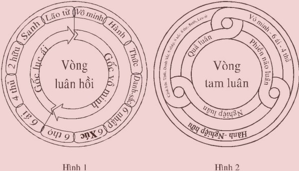

|
PHẬT GIÁO NGUYÊN THỦY
NỀN TẢNG PHẬT GIÁO QUYỂN II
QUY Y TAM BẢO Tỳ khưu Hộ Pháp
CHƯƠNG III (a)
ÂN ĐỨC TAM BẢO Chương II Tam Bảo đã trình bày xong, tiếp theo chương III Ân đức Tam Bảo như sau: Ân đức Tam Bảo là: Ân đức Phật Bảo
(Buddhaguṇa) ÂN ĐỨC PHẬT BẢO (BUDDHAGUṆA) Ân đức Phật Bảo vô cùng vi tế, sâu sắc, rộng lớn, vô lượng vô biên không sao kể xiết. Tuy vậy, trong bài kinh Dhajaggasutta, Đức Phật dạy niệm 9 Ân đức Phật Bảo như sau: “Itipi so Bhagavā Arahaṃ, Sammāsambuddho, Vijjācaraṇasampanno, Sugato, Lokavidū, Anuttaro purisadammasāratthi, Satthādevamanussānaṃ, Buddho, Bhagavā” [1] . Ý NGHĨA 9 ÂN ĐỨC PHẬT 1) Arahaṃ: Đức Arahán là Bậc cao thượng có thân khẩu ý hoàn toàn trong sạch và thanh tịnh, xứng đáng thọ nhận sự lễ bái cúng dường của chư thiên, phạm thiên và nhân loại. 2) Sammāsambuddho: Đức Chánh Đẳng Giác là Bậc tự mình chứng ngộ chân lý Tứ Thánh Đế, chứng đắc 4 Thánh Đạo - 4 Thánh Quả và Niết Bàn, diệt đoạn tuyệt mọi phiền não, mọi tham ái, mọi ác pháp không còn dư sót, đầu tiên trong toàn cõi thế giới chúng sinh; đặc biệt diệt được mọi tiền khiên tật, trở thành Đức Phật Chánh Đẳng Giác, độc nhất vô nhị. 3) Vijācaraṇasampanno: Đức Minh Hạnh Túc là Bậc có đầy đủ Tam Minh, Bát Minh và 15 Đức Hạnh cao thượng. 4) Sugato: Đức Thiện Ngôn là Bậc thuyết pháp chân lý đem lại lợi ích thật sự cho chúng sinh. 5) Lokavidū: Đức Thông Suốt Tam Giới là Bậc thấy rõ, biết rõ chúng sinh thế giới, cõi thế giới, pháp hành thế giới. 6) Anuttaro purisadammasārathi: Đức Vô Thượng giáo hóa chúng sinh là Bậc giáo huấn chúng sinh cải tà quy chánh, cải ác làm thiện, từ hạng phàm nhân lên bậc Thánh Nhân. 7) Satthādevamanussānam: Đức Thiên Nhân Sư là Bậc Thầy của chư thiên, chư phạm thiên, nhân loại… 8) Buddho: Đức Phật là Bậc tự mình chứng ngộ chân lý Tứ Thánh Đế, chứng đắc 4 Thánh Đạo - 4 Thánh Quả và Niết Bàn đầu tiên trong toàn cõi thế giới chúng sinh, trở thành Đức Phật Chánh Đẳng Giác độc nhất vô nhị, rồi Ngài thuyết pháp giáo huấn chúng sinh có duyên lành cũng chứng ngộ chân lý Tứ Thánh Đế y theo Ngài (cũng chứng đắc 4 Thánh Đạo - 4 Thánh Quả và Niết Bàn tùy theo năng lực ba-la-mật và hạnh nguyện của mỗi chúng sinh). 9) Bhagavā: Đức Thế Tôn là Bậc có 6 Ân đức đặc biệt do đầy đủ trọn vẹn 30 pháp hạnh ba-la-mật của Ngài. GIẢNG GIẢI VỀ 9 ÂN ĐỨC PHẬT Ân đức Phật thứ nhất: Araham Itipi so Bhagavā Araham. Nghĩa: So Bhagavā: Đức Thế Tôn. Itipi: Bởi Ngài là Bậc Thánh Arahán cao thượng có thân khẩu ý hoàn toàn trong sạch và thanh tịnh, xứng đáng thọ nhận sự lễ bái cúng dường của chư thiên, phạm thiên và nhân loại. Arahaṃ: Do đó Đức Thế Tôn có Ân đức Arahán. Araham có 5 ý nghĩa - Arahaṃ có nghĩa là đã xa lìa mọi phiền não. - Arahaṃ có nghĩa là đã diệt đoạn tuyệt mọi kẻ thù là phiền não. - Arahaṃ có nghĩa là đã phá huỷ vòng luân hồi trong ba giới bốn loài. - Arahaṃ có nghĩa là không bao giờ làm điều ác ở nơi kín đáo. - Arahaṃ có nghĩa là xứng đáng thọ nhận sự lễ bái cúng dường. Giải thích: 1) Araham có ý nghĩa xa lìa mọi phiền não là thế nào? Phiền não dịch từ tiếng Pāli: Kilesa. Kilesa: Phiền não là những bất thiện tâm sở đồng sinh với những bất thiện tâm làm cho thân tâm nóng nảy, khó chịu, khổ thân, khổ tâm; phiền não còn làm cho tâm, tâm sở bị ô nhiễm, khiến tạo nghiệp do thân, khẩu, ý. Phiền não có 10 loại - Tham là tâm sở tham đồng sinh với 8 tâm tham có trạng thái ham mê, hài lòng trong đối tượng. - Sân là tâm sở sân đồng sinh với 2 tâm sân, có trạng thái hung dữ, tàn bạo, không thích đối tượng. - Si là tâm sở si đồng sinh với 12 tâm bất thiện, có trạng thái si mê không biết thật tánh của các pháp. - Tà kiến là tâm sở tà kiến đồng sinh với 4 tâm tham hợp tà kiến, có trạng thái thấy sai, chấp lầm nơi đối tượng. - Ngã mạn là tâm sở ngã mạn đồng sinh với 4 tâm tham không hợp tà kiến, có trạng thái đặt mình với người: hơn người, bằng người, kém thua người. - Hoài nghi là tâm sở hoài nghi đồng sinh với tâm si hợp hoài nghi, có trạng thái hoài nghi nơi đối tượng. - Buồn chán là tâm sở buồn chán đồng sinh với 4 tâm tham và 1 tâm sân (loại tâm cần động viên), có trạng thái không hăng hái, buông bỏ đối tượng. - Phóng tâm là tâm sở phóng đồng sinh với 12 tâm bất thiện, có trạng thái không an trụ nơi đối tượng. - Không hổ thẹn là tâm sở không hổ thẹn đồng sinh với 12 tâm bất thiện, có trạng thái tự mình không biết hổ thẹn tội lỗi khi hành ác. - Không ghê sợ là tâm sở không ghê sợ đồng sinh với 12 tâm bất thiện, có trạng thái không biết ghê sợ tội lỗi khi hành ác. Đó là 10 loại phiền não, mỗi khi có phiền não nào phát sinh ở bất thiện tâm nào, thì không những làm cho tâm bị ô nhiễm, nóng nảy, mà còn làm cho thân cũng nóng nảy, khó chịu, mặt mày mất vẻ tự nhiên, không còn tươi tỉnh… Tính chất của phiền não có 3 loại - Vītikkamakilesa: Là phiền não loại thô, được biểu hiện ra ở thân hành ác, khẩu nói ác. Phiền não loại thô này có thể diệt bằng pháp hành giới, có tác ý thiện tâm (cetanā) giữ gìn giới cho thân và khẩu được trong sạch, thì diệt từng thời loại phiền não này. - Pariyuṭṭhānakilesa: Là phiền não loại trung phát sinh ở trong tâm, đó là 5 pháp chướng ngại [2] , làm cho tâm cảm thấy khó chịu, khổ tâm, ngăn cản mọi thiện pháp. Loại phiền não này có thể diệt bằng pháp hành thiền định, khi chứng đắc bậc thiền thứ nhất, nhờ 5 chi thiền, có thể diệt bằng cách đè nén, chế ngự được loại phiền não này. - Anusayakilesa: Là phiền não cực kỳ vi tế ẩn tàng ngấm ngầm ở trong tâm thức, đó là 7 pháp phiền não ngủ ngầm trong tâm [3] không hiện rõ. Loại phiền não này có thể diệt bằng pháp hành thiền tuệ, khi chứng đắc 4 Thánh Đạo Tuệ mới có thể diệt đoạn tuyệt được loại phiền não này. Phiền não tính rộng có 1.500 loại: 10 loại phiền não kể trên, khi chúng liên quan đến đối tượng làm nhân duyên để phát sinh phiền não, tính rộng có 1.500 loại phiền não. Cách tính như sau: 75 pháp có thể làm đối tượng của phiền não: - Tâm
tính là 1 pháp (vì cùng có một trạng thái biết đối tượng). Như vậy, gồm có (1 + 52 + 18 + 4): 75 pháp có thể làm đối tượng của phiền não. 75 pháp này làm đối tượng của phiền não ở bên trong mình, là kẻ thù bên trong. 75 pháp này làm đối tượng của phiền não ở bên ngoài mình, là kẻ thù bên ngoài. Đối tượng của phiền não bên trong mình có 75 pháp và bên ngoài mình có 75 pháp gồm cả thảy 150 pháp, nhân với 10 loại phiền não (tham, sân, si, tà kiến, ngã mạn, hoài nghi, buồn chán, phóng tâm, không hổ thẹn, không ghê sợ) thành 1.500 loại phiền não (150 x 10). Thật ra, 10 loại phiền não trong tâm bất thiện, mới làm cho tâm bị ô nhiễm, làm cho tâm nóng nảy, khó chịu, khổ tâm, khổ thân. Phiền não làm nhân duyên trực tiếp tạo mọi ác nghiệp và làm nhân duyên gián tiếp tạo mọi thiện nghiệp trong tam giới (do vô minh nên tạo ác nghiệp, thiện nghiệp), để rồi cho quả của nghiệp, dẫn dắt trong vòng tử sinh luân hồi trong ba giới [4] bốn loài [5] . Nghiệp này được dẫn dắt do bởi tham ái (tanhā). Tham ái đó là tâm sở tham (lobhacetasika). Tham ái có tất cả 108 loại. Tham ái có 108 loại Cách tính 108 loại tham ái theo 3 tính chất, 6 đối tượng, 2 bên, 3 thời như sau: 3 tính chất của tham ái: - Dục ái: Tham ái trong 6 đối tượng: sắc, thanh, hương, vị, xúc và pháp. - Hữu ái: Tham ái trong 6 đối tượng hợp với thường kiến và tham ái trong thiền hữu sắc, thiền vô sắc, trong cõi sắc giới, cõi vô sắc giới. - Phi hữu ái: Tham ái trong 6 đối tượng hợp với đoạn kiến. 6 đối tượng của tham ái: - Sắc ái:
Sắc trần là đối tượng của tham ái. 2 bên: - Bên trong:
Tham ái phát sinh bên trong tâm của mình. 3 thời: - Thời quá khứ:
Tham ái đã phát sinh trong thời quá khứ. Như vậy, tóm lại tham ái có 3 tính chất nhân với 6 đối tượng, nhân với 2 bên (trong và ngoài), nhân với 3 thời (quá khứ, hiện tại, vị lai) (3 x 6 x 2 x 3): 108 loại tham ái là nhân phát sinh khổ tái sinh, dẫn đến khổ già, khổ bệnh, khổ chết… bao nhiêu nỗi khổ khác không sao kể xiết, đều do tham ái là nhân sinh mọi Khổ Đế ấy. Đức Bồ Tát Siddhattha chứng ngộ chân lý Tứ Thánh Đế, chứng đắc 4 Thánh Đạo - 4 Thánh Quả và Niết Bàn, diệt đoạn tuyệt được tất cả 1.500 loại phiền não, 108 loại tham ái không còn dư sót, tại dưới Đại cội Bồ đề vào canh chót đêm rằm tháng tư (âm lịch), trở thành bậc Chánh Đẳng Giác, độc nhất vô nhị, đầu tiên trong toàn thế giới chúng sinh. Ngoài ra, Ngài còn có khả năng đặc biệt tận diệt được mọi tiền khiên tật (vāsanā) [6] do tích luỹ từ vô lượng kiếp ở quá khứ. Cho nên, Đức Phật có mỗi hành vi cử chỉ đi, đứng, ngồi, nằm, nói năng… thật hoàn toàn thánh thiện. Do đó, Đức Thế Tôn có Ân đức Araham với ý nghĩa xa lìa mọi phiền não và tiền khiên tật không bao giờ phát sinh được nữa. 2) Araham có ý nghĩa diệt đoạn tuyệt mọi kẻ thù là phiền não như thế nào? Đức Phật dạy: Kẻ thù nguy hiểm chính là 1.500 loại phiền não của mình. Ngài gọi phiền não là kẻ thù, là vì ở trong đời này, kẻ thù thường tìm cơ hội làm khổ mình, sát hại mình, không có một kẻ thù nào mong cho mình được an lạc. Cũng như vậy, phiền não phát sinh trong tâm bất thiện làm cho mình khổ tâm, khổ thân, nóng nảy, khó chịu và còn khiến mình tạo mọi ác nghiệp, làm khổ chúng sinh khác, để rồi phải chịu quả khổ trong kiếp hiện tại lẫn nhiều kiếp vị lai. Sự thật, chỉ có phiền não bên trong tâm bất thiện của mình, mới trực tiếp làm khổ mình; còn phiền não bên ngoài người khác không trực tiếp làm khổ mình được, nếu mình không tiếp nhận. Ví dụ: Người ta mắng chửi, đánh đập mình, nếu mình có tâm nhẫn nại, không sân hận, phiền não không sinh, thì mình không bị khổ tâm. Nếu tâm phiền não sân hận phát sinh, thì chính phiền não bên trong tâm mình làm cho mình khổ tâm, hoàn toàn không phải phiền não bên ngoài của người khác làm cho mình khổ tâm. Còn phần khổ thân thuộc về quả của nghiệp, không một ai tránh khỏi, dù là Đức Phật hay chư Bậc Thánh Arahán. Đức Phật và chư Bậc Thánh Arahán đã diệt đoạn tuyệt được tất cả 1.500 loại phiền não rồi, hoàn toàn không còn khổ tâm nữa; nhưng còn có sắc thân, nên vẫn còn có khổ thân cho đến khi hết tuổi thọ, tịch diệt Niết Bàn, chấm dứt tử sinh luân hồi trong ba giới bốn loài. Khi ấy mới thật là giải thoát hoàn toàn mọi cảnh khổ. Đức Bồ Tát Siddhattha đã diệt đoạn tuyệt tất cả mọi kẻ thù là 1.500 loại phiền não, bằng 4 Thánh Đạo Tuệ tại dưới Đại cội Bồ đề, vào canh chót đêm rằm tháng tư (âm lịch), trở thành Đức Phật Chánh Đẳng Giác độc nhất vô nhị, đầu tiên trong toàn thế giới chúng sinh. Do đó, Đức Thế Tôn có Ân đức Araham với ý nghĩa diệt đoạn tuyệt mọi kẻ thù là phiền não không còn dư sót. 3) Araham có ý nghĩa phá huỷ vòng luân hồi trong ba giới bốn loài như thế nào? Vòng luân hồi đó chính là pháp “Thập Nhị Duyên Sanh” có 12 chi pháp: - Do vô minh làm
duyên, nên hành sanh. Từ vô minh đến lão tử gồm có 12 chi pháp. Pháp này làm duyên để sinh pháp kia là quả; pháp quả ấy trở lại làm duyên để sinh pháp quả khác, và cứ như vậy duyên quả liên hoàn với nhau thành vòng luân hồi, không có chỗ bắt đầu và cuối cùng. Như vậy, vô minh chỉ là nhân duyên quá khứ không phải là nhân bắt đầu, vì vô minh còn là quả của bốn pháp trầm luân. Như Đức Phật dạy: “Āsavasamudayā avijjāsamudayo…” [7] . “Do có sự sinh của bốn pháp trầm luân, nên có sự sinh của vô minh...”. Vòng luân hồi Thập Nhị Duyên Sanh này phân chia thành Tam Luân, chuyển biến theo chiều hướng nhất định. Phiền não luân:
Gồm có vô minh, lục ái và tứ thủ. Theo vòng luân hồi thì không thể biết được chỗ bắt đầu và chỗ cuối cùng, nên chỉ nhận biết theo định luật nhân - quả, mà nhân quả theo pháp Thập Nhị Duyên Sanh thì mỗi chi pháp không thuần chỉ là nhân, là quả, mà sự thật, mỗi chi pháp là quả của pháp trước, trở lại làm nhân duyên của pháp sau, và cứ tiếp tục như vậy theo định luật nhân - quả liên hoàn tiếp nối với nhau thành vòng luân chuyển không ngừng từ kiếp này sang kiếp khác, từ vô thủy đến vô chung, trong vòng tử sinh luân hồi trong ba giới bốn loài. Thường chỉ có thể thấy rõ sự thay đổi về phần sắc thân [8] (đổi kiếp, chết) hay thay đổi sắc uẩn mà thôi; còn phần tâm gọi là danh uẩn có 4 uẩn (thọ, tưởng, hành, thức uẩn) liên quan nhân duyên sanh rồi diệt, diệt rồi sanh liên tục không ngừng từ đời này sang đời khác, do năng lực của nghiệp mà mình đã tạo, từ vô thủy đến vô chung, đối với chúng sinh còn vô minh và tham ái. Vòng luân hồi “Thập Nhị Duyên Sanh” luân chuyển, biến đổi theo ba luân: Phiền não luân Nghiệp luân Quả luân Phiền não luân… BIỂU TƯỢNG VÒNG LUÂN HỒI VÀ VÒNG TAM LUÂN  1- Phiền não luân khiến tạo nghiệp luân Chúng sinh còn vô minh, lục ái, tứ thủ làm nhân duyên khiến tạo nên nghiệp bất thiện, nghiệp thiện do thân, khẩu, ý. Phiền não làm nhân duyên tạo nghiệp bất thiện Số chúng sinh do vô minh, không biết rõ nghiệp bất thiện (nghiệp ác) cho quả khổ trong kiếp hiện tại lẫn nhiều kiếp trong vị lai. Và cũng có số chúng sinh, dù nghe hiểu biết nghiệp bất thiện cho quả khổ như vậy, nhưng vì vô minh, tham ái có nhiều năng lực quá, nên xui khiến tạo mọi nghiệp bất thiện bằng thân hành ác như: sát sanh, trộm cắp, tà dâm; khẩu nói ác như: nói dối, nói lời đâm thọc chia rẽ, nói lời thô tục, nói lời vô ích; ý nghĩ ác như: tham lam, thù hận, tà kiến. Phiền não làm nhân duyên tạo nghiệp thiện Số chúng sinh do vô minh, không biết rõ chân lý Tứ Thánh Đế, không biết khổ của ngũ uẩn; do đó, muốn hưởng sự an lạc tạm thời, nên tạo mọi thiện nghiệp: Dục giới thiện nghiệp cho quả an lạc trong cõi dục giới. Sắc giới thiện nghiệp cho quả an lạc trong cõi sắc giới. Vô sắc giới thiện nghiệp cho quả an lạc trong cõi vô sắc giới. Sự an lạc trong cõi tam giới này không phải là chân lý, mà chúng chỉ có tính cách tạm thời tuỳ theo năng lực quả của thiện nghiệp ấy. Như vậy, gọi là phiền não luân khiến tạo nghiệp luân. 2- Nghiệp luân cho quả luân Chúng sinh còn phiền não đã tạo nghiệp bất thiện, nghiệp thiện, khi có cơ hội nghiệp nào cho quả, thì chúng sinh ấy thọ quả của nghiệp ấy. Nếu nghiệp bất thiện (nghiệp ác) cho quả, thì phải chịu quả khổ trong kiếp hiện tại và nhiều kiếp vị lai. * Quả khổ (xấu) trong kiếp hiện tại Mắt được nhìn thấy những hình ảnh xấu. Tai được nghe những âm thanh dở. Mũi được ngửi những mùi hôi hám. Lưỡi được nếm những vị dở. Thân được tiếp xúc những vật thô cứng. Tâm được biết điều khổ não. * Quả khổ (xấu) trong kiếp vị lai Nếu nghiệp bất thiện cho quả tái sinh 1 trong 4 cõi ác giới: địa ngục, atula, ngạ quỷ, súc sinh tùy theo năng lực quả của nghiệp bất thiện ấy, thì chúng sinh ấy phải chịu khổ cho đến khi mãn quả của nghiệp bất thiện ấy. Nếu nghiệp thiện cho quả, thì được an hưởng quả báu an lạc trong kiếp hiện tại và nhiều kiếp vị lai như sau: * Quả báu trong kiếp hiện tại Mắt được nhìn thấy những hình ảnh đẹp. Tai được nghe những âm thanh hay. Mũi được ngửi những mùi thơm tho. Lưỡi được nếm những vị ngon lành. Thân được tiếp xúc êm ấm. Tâm được biết những điều tốt. * Quả báu trong kiếp vị lai Nếu dục giới thiện nghiệp cho quả tái sinh làm người, là hạng người như thế nào, hoàn toàn tùy theo nghiệp cho quả… hoặc tái sinh làm chư thiên trong 6 cõi trời dục giới, thì vị chư thiên ấy hưởng sự an lạc, sự sống lâu ở cõi trời dục giới ấy cho đến hết tuổi thọ. Nếu sắc giới thiện nghiệp cho quả tái sinh làm phạm thiên có ngũ uẩn trong 16 cõi trời sắc giới, tùy theo bậc thiền sở đắc của mình, thì vị phạm thiên ấy hưởng sự an lạc vi tế hơn ở cõi dục giới, sự sống lâu theo tuổi thọ của cõi trời sắc giới ấy. Nếu vô sắc giới thiện nghiệp cho quả tái sinh làm phạm thiên có tứ uẩn (không có sắc uẩn) trong 4 cõi trời vô sắc giới, tùy theo bậc thiền sở đắc của mình, thì vị phạm thiên ấy hưởng sự an lạc vi tế hơn ở cõi trời sắc giới, sự sống lâu theo tuổi thọ của cõi trời vô sắc giới ấy. 3- Quả luân sanh phiền não luân Quả luân là sự hiện hữu của mỗi chúng sinh trong tam giới: Chúng sinh có ngũ uẩn trong cõi dục giới và cõi sắc giới; hoặc chúng sinh có tứ uẩn (không có sắc uẩn) trong cõi vô sắc giới; hoặc chúng sinh có nhất uẩn là sắc uẩn (không có 4 danh uẩn), trong cõi sắc giới Vô Tưởng Thiên. Tất cả chúng sinh này đều chưa diệt đoạn tuyệt được phiền não, vô minh, tham ái…, cho nên khi có nhân duyên thì phiền não phát sinh, khiến tạo nên nghiệp thiện hoặc nghiệp bất thiện; rồi trở lại vòng Tam Luân chuyển biến không ngừng từ kiếp này sang kiếp khác, từ vô thủy đến vô chung, trong vòng khổ tử sinh luân hồi trong ba giới bốn loài. Ba luân này chuyển biến theo định luật nhân - quả: Phiền não luân là nhân - nghiệp luân là quả, nghiệp luân là nhân - quả luân là quả, quả luân là nhân - phiền não luân là quả và tiếp tục như vậy thành vòng Tam Luân. Đức Thế Tôn đã diệt đoạn tuyệt được tất cả 1.500 loại phiền não rồi, nhổ tận gốc rễ của vô minh và tham ái bằng 4 Thánh Đạo Tuệ rồi, vòng Tam Luân tan rã, tách rời không còn luân chuyển được nữa, do phá hủy được phiền não luân. Do đó, Đức Thế Tôn có Ân đức Araham với ý nghĩa phá huỷ vòng luân hồi sanh tử trong ba giới bốn loài. 4- Araham có ý nghĩa không bao giờ hành điều ác ở nơi kín đáo như thế nào? Nơi kín đáo là nơi không một ai thấy, không một ai nghe, không một ai biết, cũng không có một ai nghi ngờ. Đối với người còn có tâm bất thiện, nơi kín đáo là nơi dễ hành ác do thân, khẩu, ý, vì không sợ ai chê trách. Nhưng đối với Đức Thế Tôn là Bậc đã diệt đoạn tuyệt tất cả mọi phiền não, tâm bất thiện không còn nữa, nên thân, khẩu, ý của Ngài lúc nào cũng hoàn toàn trong sạch thanh tịnh. Cho nên, dầu ở nơi kín đáo, không một ai thấy, không một ai nghe, không một ai biết, không một ai nghi ngờ, thì Đức Thế Tôn cũng không bao giờ hành ác do thân, khẩu, ý nữa. Do đó, Đức Thế Tôn có Ân đức Araham với ý nghĩa không bao giờ hành điều ác ở nơi kín đáo. 5- Araham có ý nghĩa bậc xứng đáng thọ nhận sự lễ bái cúng dường như thế nào? Đức Thế Tôn là Bậc Tối Thượng độc nhất vô nhị, trong muôn ngàn thế giới chúng sinh. Thật vậy, trong toàn thể chúng sinh không có một người nào, một Samôn, Bàlamôn, chư thiên, phạm thiên… nào cao thượng hơn Đức Thế Tôn về giới, định, tuệ, giải thoát, giải thoát tri kiến. Chỉ Đức Thế Tôn mới có giới đức trong sạch hoàn toàn thanh tịnh, có định đức hoàn toàn thanh tịnh; có tuệ đức hoàn toàn thanh tịnh, có tuệ giải thoát đức hoàn toàn thanh tịnh, có tuệ giải thoát tri kiến đức hoàn toàn thanh tịnh. Chỉ có Đức Thế Tôn mới có đầy đủ 5 pháp: giới, định, tuệ, giải thoát, giải thoát tri kiến hoàn toàn thanh tịnh mà thôi. Vì vậy, Đức Thế Tôn là Bậc Tối Thượng nhất trong toàn thể chúng sinh, là Bậc xứng đáng cho chúng sinh lễ bái cúng dường. Chúng sinh lễ bái cúng dường rồi, sẽ được quả báu cao quý, được sự tiến hoá, sự lợi ích, sự an lạc lâu dài. Như Đức Phật dạy: “Này chư Tỳ khưu, Bậc cao thượng độc nhất, khi xuất hiện trên thế gian, để đem lại sự lợi ích, sự tiến hoá, sự an lạc lâu dài cho phần đông chúng sinh, để tế độ chúng sinh, nhân loại, chư thiên, phạm thiên. Bậc Tối Thượng độc nhất ấy là ai? Bậc cao thượng độc nhất ấy chính là Như Lai, Đức Arahán, Đức Phật Chánh Đẳng Giác. “Này chư Tỳ khưu, Như Lai là Bậc Tối Thượng độc nhất, khi xuất hiện trên thế gian, để đem lại sự lợi ích, sự tiến hoá, sự an lạc lâu dài cho phần đông chúng sinh, nhân loại, chư thiên, phạm thiên” [9] Do đó, Đức Thế Tôn có Ân đức Araham với ý nghĩa bậc xứng đáng thọ nhận sự lễ bái cúng dường của tất cả chúng sinh. Ân đức “Araham” có ý nghĩa vô cùng sâu sắc, vi tế, rộng lớn, vô lượng vô biên. Qua 5 ý nghĩa tóm tắt trên chỉ để hiểu biết rõ một phần ý nghĩa về Ân đức Araham. Đặc biệt đáng ghi nhớ ý nghĩa “Bậc xứng đáng thọ nhận sự lễ bái cúng dường của tất cả chúng sinh”. Niệm Ân đức Araham Người Phật tử thường niệm tưởng đến Ân đức Phật, “Ân đức Araham” này, sẽ phát sinh đức tin trong sạch nơi Đức Thế Tôn, có trí tuệ sáng suốt, phát sinh hỷ lạc, tăng trưởng lòng tôn kính nơi Đức Thế Tôn, có lòng dũng cảm, tránh khỏi mọi điều tai hoạ, phước thiện được tăng trưởng. Hành giả tiến hành đề mục niệm Ân đức Phật, niệm Ân đức Arahaṃ như sau: Câu Ân đức Arahaṃ: “Itipi so Bhagavā Araham..., Itipi so Bhagavā Araham..., Itipi so Bhagavā Araham...” làm đối tượng thiền định. Hoặc danh từ Ân đức Arahaṃ: “Araham… Araham… Araham…” làm đối tượng thiền định. Đề mục thiền định niệm Ân đức Phật này có ý nghĩa vô cùng sâu sắc, vi tế, rộng lớn vô lượng vô biên, vì vậy, định tâm không thể an định vào một điểm nào nhất định được, nên chỉ có khả năng dẫn đến chứng đạt cận định (upacārasamādhi) mà thôi, không thể chứng đạt đến an định (appanāsamādhi), do đó không thể chứng đắc được bậc thiền hữu sắc nào. Như vậy, tâm cận định này vẫn còn trong dục giới đại thiện tâm. Do năng lực dục giới thiện nghiệp tiến hành niệm Ân đức Phật này sẽ cho quả như sau: Kiếp hiện tại: Hành giả là người có đức tin trong sạch nơi Tam Bảo: Phật Bảo, Pháp Bảo, Tăng Bảo; có trí tuệ sáng suốt, phước thiện tăng trưởng, tránh được mọi tai họa, thân tâm thường an lạc. Kiếp vị lai: Hành giả sau khi chết, nếu thiện nghiệp này cho quả tái sinh làm người sẽ là người có đầy đủ tam nhân (vô tham, vô sân, vô si) cao quý, được nhiều người quý mến, kính trọng; nếu tái sinh làm chư thiên trong cõi trời nào, trong 6 cõi trời dục giới, sẽ là một chư thiên có nhiều oai lực, có hào quang sáng ngời, hưởng sự an lạc cao quý đến hết tuổi thọ trong cõi trời ấy. Dục giới thiện nghiệp này có thể cho quả tốt lành suốt nhiều kiếp, đặc biệt còn làm duyên lành dễ dàng chứng ngộ chân lý Tứ Thánh Đế, chứng đắc Thánh Đạo - Thánh Quả và Niết Bàn trong thời vị lai nào đó. 2- Ân đức Phật thứ nhì: Sammāsambuddho Itipi so Bhagavā Sammāsambuddho. Nghĩa: So Bhagavā: Đức Thế Tôn. Itipi: Bởi Ngài là Bậc tự mình chứng ngộ chân lý Tứ Thánh Đế, chứng đắc 4 Thánh Đạo - 4 Thánh Quả và Niết Bàn, diệt đoạn tuyệt mọi phiền não, mọi tham ái, mọi ác pháp không còn dư sót, đầu tiên trong toàn cõi thế giới chúng sinh; đặc biệt diệt được mọi tiền khiên tật, trở thành Đức Phật Chánh Đẳng Giác, độc nhất vô nhị. Sammāsambuddho: Do đó Đức Thế Tôn có Ân đức Đức Phật Chánh Đẳng Giác. Chân lý Tứ Thánh Đế Khổ Thánh Đế: Đó là ngũ uẩn, danh pháp, sắc pháp trong tam giới là pháp nên biết. Chính Đức Phật tự mình đã biết rõ xong rồi. Nhân sanh Khổ Thánh Đế (Tập Thánh Đế): Đó là tham ái là pháp nên diệt. Chính Đức Phật tự mình đã diệt tất cả xong rồi. Diệt khổ Thánh Đế (Diệt Thánh Đế): Đó là Niết Bàn là pháp nên chứng ngộ. Chính Đức Phật tự mình đã chứng ngộ Niết Bàn xong rồi. Pháp hành diệt Khổ Thánh Đế (Đạo Thánh Đế): Đó là Bát Thánh Đạo hợp đủ 8 chánh: chánh kiến, chánh tư duy, chánh ngữ, chánh nghiệp, chánh mạng, chánh tinh tấn, chánh niệm, chánh định là pháp nên tiến hành để chứng ngộ Niết Bàn, diệt Khổ Thánh Đế. Chính Đức Phật tự mình đã tiến hành xong rồi. Đức Phật đã tự mình chứng ngộ chân lý Tứ Thánh Đế, chứng đắc 4 Thánh Đạo - 4 Thánh Quả và Niết Bàn, không có vị Thầy nào chỉ giáo. Đức Thế Tôn tự mình chứng ngộ chân lý Tứ Thánh Đế, bằng trí tuệ quán xét pháp “Thập Nhị Duyên Sanh”. Như: “Avijjā paccayā saṅkhārā”…. “Do vô minh làm duyên, nên hành sanh”... Đức Thế Tôn đã chứng ngộ Khổ Thánh Đế và Nhân sanh Khổ Thánh Đế. Và trí tuệ quán xét “Thập Nhị Nhân Diệt”. Như: “Avijjāyatveva asesavirāganirodhā saṅkhāranirodho”…. “Do diệt tận vô minh, tham ái không còn dư sót, nên diệt hành”…. Đức Thế Tôn đã chứng ngộ Diệt Khổ Thánh Đế và Pháp hành diệt Khổ Thánh Đế. Điều này Đức Phật đã khẳng định với nhóm 5 Tỳ khưu trong bài kinh Chuyển Pháp Luân [10] : - Này chư Tỳ khưu, khi nào trí tuệ thiền tuệ thấy rõ, biết rõ thật tánh của Tứ Thánh Đế theo Tam Tuệ Luân (trí tuệ học, trí tuệ hành, trí tuệ thành), thành 12 loại trí tuệ hoàn toàn trong sáng, thanh tịnh đã phát sinh đến với Như Lai. Này chư Tỳ khưu, khi ấy Như Lai khẳng định, truyền dạy rằng: “Như Lai đã chứng đắc thành Đức Phật Chánh Đẳng Giác vô thượng trong toàn thế giới chúng sinh, nhân loại, vua chúa, Samôn, Bàlamôn, chư thiên, ma vương, phạm thiên cả thảy”. Như vậy, Đức Thế Tôn đã tự mình chứng ngộ chân lý Tứ Thánh Đế, chứng đắc 4 Thánh Đạo - 4 Thánh Quả, trở thành bậc Thánh Arahán đầu tiên trên toàn thế giới chúng sinh, nên có Ân đức Sammāsambuddho: Đức Phật Chánh Đẳng Giác. Ñeyyadhamma Đức Phật Chánh Đẳng Giác đặc biệt có đủ 5 pháp Ñeyyadhamma: Saṅkhāra: Tất cả pháp hành cấu tạo. Vikāra: Sắc pháp, danh pháp biến đổi. Lakkhaṇa: Trạng thái sinh trụ diệt của sắc pháp, danh pháp. Paññattidhamma: Chế định pháp: Chế định ngôn ngữ, để thuyết giảng chánh pháp. Nibbāna: Niết Bàn, pháp diệt Khổ Thánh Đế. Vì Đức Phật Chánh Đẳng Giác hoặc Đức Phật Toàn Giác có đầy đủ 5 pháp ấy, nên Ngài có khả năng chế định ra ngôn ngữ, để thuyết pháp tế độ chúng sinh [11] . Do đó, Đức Thế Tôn có Ân đức Sammāsambuddho: Đức Phật Chánh Đẳng Giác. Niệm Ân đức Sammāsambuddho Người Phật tử thường niệm tưởng đến Ân đức Phật, “Ân đức Sammāsambuddho” này, sẽ phát sinh đức tin trong sạch nơi Đức Thế Tôn, có trí tuệ sáng suốt, phát sinh hỷ lạc, tăng trưởng lòng tôn kính nơi Đức Thế Tôn, có lòng dũng cảm, tránh khỏi mọi điều tai họa, phước thiện được tăng trưởng. Hành giả tiến hành đề mục niệm Ân đức Phật, niệm Ân đức Sammāsambuddho như sau: Câu Ân đức Sammāsambuddho: “Itipi so Bhagavā Sammāsambuddho..., Itipi so Bhagavā Sammāsambuddho..., Itipi so Bhagavā Sammāsambuddho...” làm đối tượng thiền định. Hoặc danh từ Ân đức Sammāsambuddho “Sammāsambuddho..., Sammā-sambuddho..., Sammāsambuddho...” làm đối tượng thiền định... Đề mục thiền định niệm Ân đức Phật này có ý nghĩa vô cùng sâu sắc, vi tế, rộng lớn vô lượng vô biên, vì vậy, định tâm không thể an định vào một điểm nào nhất định được, nên chỉ có khả năng dẫn đến chứng đạt cận định (upacārasamādhi) mà thôi, không thể chứng đạt đến an định (appanāsamādhi), do đó không thể chứng đắc được bậc thiền hữu sắc nào. Như vậy, tâm cận định này vẫn còn trong dục giới đại thiện tâm. Do năng lực dục giới thiện nghiệp tiến hành niệm Ân đức Phật này sẽ cho quả như sau: Kiếp hiện tại: Hành giả là người có đức tin trong sạch nơi Tam Bảo: Phật Bảo, Pháp Bảo, Tăng Bảo; có trí tuệ sáng suốt, phước thiện tăng trưởng, tránh được mọi tai họa, thân tâm thường an lạc. Kiếp vị lai: Hành giả sau khi chết, nếu thiện nghiệp này cho quả tái sinh làm người sẽ là người có đầy đủ tam nhân (vô tham, vô sân, vô si) cao quý, được nhiều người quý mến, kính trọng… (Phần còn lại giống như Ân đức Araham). Ân đức Phật thứ ba: Vijjācaranasampanno Itipi so Bhagavā vijjācaranasampanno. Nghĩa: So Bhagavā: Đức Thế Tôn. Itipi: Bởi Ngài là Bậc có đầy đủ Tam Minh, Bát Minh và 15 Đức Hạnh cao thượng Vijjācaranasampanno: Do đó Đức Thế Tôn có Ân đức Minh Hạnh Túc. Tam Minh Túc mạng minh là trí tuệ thấy rõ, biết rõ, nhớ rõ trở lại tiền kiếp từ một kiếp, hằng trăm kiếp, hằng ngàn kiếp, hằng vạn kiếp, hằng triệu kiếp, hằng triệu triệu kiếp. Đức Phật Chánh Đẳng Giác có khả năng ghi nhớ lại vô số kiếp không có giới hạn (còn Đức Phật Độc Giác, bậc Thánh Thanh Văn Giác có giới hạn). Túc mạng minh là trí tuệ biết rõ tiền kiếp thuộc loại chúng sinh nào, tên gì, thuộc dòng dõi nào, tạo thiện nghiệp, bất thiện nghiệp, ba-la-mật, thọ lạc, thọ khổ, tuổi thọ… đều ghi nhớ rõ ràng mọi chi tiết. Thiên nhãn minh là trí tuệ thấy rõ, biết rõ kiếp quá khứ, kiếp vị lai của tất cả chúng sinh như mắt của chư thiên, phạm thiên. Thiên nhãn minh có hai loại: a) Tử sanh minh là trí tuệ biết rõ sự tử, sự tái sinh của tất cả chúng sinh. Đức Thế Tôn có tử sanh minh này nên biết rõ chúng sinh sau khi chết, rồi do nghiệp nào cho quả tái sinh trong cảnh giới nào. b) Vị lai kiến minh là trí tuệ thấy rõ những kiếp vị lai của chúng sinh. Chư Phật dùng vị lai kiến minh này để thọ ký chúng sinh trong những kiếp vị lai xa xăm, còn thời gian bao nhiêu đại kiếp trái đất nữa, sẽ trở thành Đức Phật Chánh Đẳng Giác, Đức Phật Độc Giác, bậc Thánh Thanh Văn Giác… Lậu tận minh là trí tuệ thiền tuệ Siêu tam giới, đó là 4 Thánh Đạo Tuệ, diệt đoạn tuyệt được 4 pháp phiền não trầm luân không còn dư sót; đồng thời Đức Thế Tôn tận diệt được tất cả mọi tiền khiên tật (vāsanā) đã tích luỹ từ vô lượng kiếp trong quá khứ. Bát Minh Túc mạng minh. Thiên nhãn minh. Lậu tận minh. Thiền tuệ minh là trí tuệ thiền tuệ tam giới thấy rõ, biết rõ sự sinh, sự diệt của danh pháp sắc pháp, và trí tuệ thiền tuệ Siêu tam giới chứng đắc 4 Thánh Đạo Tuệ, 4 Thánh Quả Tuệ và Niết Bàn. Hoá tâm minh là trí tuệ có khả năng hoá thân khác theo mong muốn của mình, do năng lực của thiền định. Như trường hợp Đức Phật thuyết tạng Vi Diệu Pháp vào hạ thứ bảy tại cung Tam Thập Tam Thiên suốt ba tháng. Mỗi ngày đến giờ đi khất thực, Đức Phật hoá thân khác như Đức Phật tiếp tục thuyết pháp, còn chính Đức Phật thật đi khất thực ở bắc Câu Lưu Châu. Khi độ ngọ xong trở lại cung trời thay thế Đức Phật hoá thân, chỉ có một số ít chư thiên, phạm thiên bậc cao có nhiều oai lực mới biết được. Thần thông minh là trí tuệ có khả năng biến hoá nhiều phép thần thông khác nhau, do năng lực thiền định, như một người hoá thành nhiều người, tàng hình không ai thấy, hiện hình nơi khác, đi xuyên qua núi, đi trên hư không… Thiên nhĩ minh là trí tuệ có khả năng nghe được nhiều thứ tiếng người, tiếng súc sinh, tiếng chư thiên gần xa, do năng lực thiền định, như tai của chư thiên. Tha tâm minh là trí tuệ có khả năng biết đến tâm của người khác, chúng sinh khác đang nghĩ gì, tâm thiện hoặc tâm bất thiện... Đó là Tam Minh, Bát Minh. 15 Đức Hạnh cao thượng Giới đức: Hoàn toàn trong sạch và thanh tịnh. Thu thúc lục căn thanh tịnh: Thu thúc khi thấy bằng mắt, nghe bằng tai, ngửi bằng mũi, nếm bằng lưỡi, tiếp xúc bằng thân, suy nghĩ bằng ý hoàn toàn thanh tịnh. Biết tri túc trong vật thực: Nhận vật thực vừa đủ, khi thọ thực đàng hoàng, còn 4 - 5 miếng cơm đủ no, biết ngừng lại để dành uống nước, không dùng no quá. Tinh tấn tỉnh thức: Ngày, đêm tinh tấn hành phận sự, nghĩa là suốt ngày không ngủ, ban đêm có 3 canh; canh đầu: ngồi hành đạo, đi kinh hành; canh giữa (22 giờ khuya): nằm nghỉ ngủ trong tư thế nằm nghiêng bên phải, có trí nhớ, trí tuệ trước khi ngủ, sẽ thức dậy lúc cuối canh giữa, canh chót (2 giờ sáng): hành đạo, đi kinh hành… Gọi là tinh tấn luôn luôn tỉnh thức. Đức tin: Có đức tin không lay chuyển. Trí nhớ: Thường có trí nhớ. Hổ thẹn: Tự mình biết hổ thẹn, không làm mọi tội ác. Ghê sợ: Biết ghê sợ, không làm mọi tội ác. Đa văn túc trí: Học nhiều hiểu rộng tất cả các pháp. Tinh tấn: Có tâm tinh tấn không ngừng nghỉ. Trí tuệ: Có trí tuệ hiểu biết rõ tất cả các pháp. Đệ nhất thiền: Có đệ nhất thiền hữu sắc và vô sắc. Đệ nhị thiền: Có đệ nhị thiền hữu sắc và vô sắc. Đệ tam thiền: Có đệ tam thiền hữu sắc và vô sắc. Đệ tứ thiền: Có đệ tứ thiền hữu sắc và vô sắc. Đó là 15 Đức Hạnh cao thượng. Đức Thế Tôn có trọn đủ Tam Minh, Bát Minh và 15 Đức Hạnh cao thượng hợp với trí đại bi, để tế độ chúng sinh có hữu duyên nên tế độ, cứu vớt chúng sinh ấy giải thoát khỏi mọi cảnh khổ tử sinh luân hồi trong ba giới bốn loài. Do đó, Đức Thế Tôn có Ân đức Vijjācaranasampanno: Đức Minh Hạnh Túc. Niệm Ân đức Vijjācaranasampanno Người Phật tử thường niệm tưởng đến Ân đức Phật, “Ân đức Vijjācaranasampanno” này, sẽ phát sinh đức tin trong sạch nơi Đức Thế Tôn, có trí tuệ sáng suốt, phát sinh hỷ lạc, tăng trưởng lòng tôn kính nơi Đức Thế Tôn, có lòng dũng cảm, tránh khỏi mọi điều tai hoạ, phước thiện được tăng trưởng. Hành giả tiến hành đề mục niệm Ân đức Phật, niệm Ân đức Vijjācaranasampanno như sau: Câu Ân đức Vijjācaranasampanno: “Itipi so Bhagavā Vijjācaranasampanno..., Itipi so Bhagavā Vijjācarana-sampanno..., Itipi so Bhagavā Vijjācaranasampanno...” làm đối tượng thiền định. Hoặc danh từ Ân đức Vijjācaranasampanno: “Vijjācaranasampanno..., Vijjā-caranasampanno..., Vijjācaranasampanno...” làm đối tượng thiền định… (Phần còn lại giống như Ân đức Araham). Ân đức Phật thứ tư: Sugato Itipi so Bhagavā Sugato. (Cách đọc: Í-tí-pí-xô phá-gá-voa Xú-gá-tô) Nghĩa: So Bhagavā: Đức Thế Tôn. Itipi: Bởi Ngài là Bậc thuyết pháp chân lý đem lại lợi ích thật sự cho chúng sinh. Sugato: Do đó Đức Thế Tôn có Ân đức Thiện Ngôn. Sugato có 4 ý nghĩa - Ngự theo Thánh
Đạo. Giải thích: Sugato có ý nghĩa ngự theo Thánh Đạo như thế nào? Đức Thế Tôn ngự (hành) theo Thánh Đạo hợp đủ 8 chánh là: Chánh kiến: Trí tuệ chân chính, đó là trí tuệ thiền tuệ chứng ngộ chân lý Tứ Thánh Đế. Chánh tư duy: Tư duy chân chính, đó là tư duy thoát khỏi ngũ trần, tư duy không thù oán, tư duy không hại chúng sinh. Chánh ngữ: Lời nói chân chính, đó là không nói dối, không nói lời đâm thọc chia rẽ, không nói lời thô tục, không nói lời vô ích. Chánh nghiệp: Hành nghiệp chân chính, đó là không sát sanh, không trộm cắp, không tà dâm. Chánh mạng: Nuôi mạng chân chính, đó là không sống theo tà mạng do thân, khẩu hành ác. Chánh tinh tấn: Tinh tấn chân chính là: Tinh tấn diệt ác pháp đã sinh. Tinh tấn ngăn không cho ác pháp phát sinh. Tinh tấn làm cho thiện pháp phát sinh. Tinh tấn làm cho tăng trưởng thiện pháp đã sinh. Chánh niệm: Niệm chân chính, đó là niệm thân, niệm thọ, niệm tâm, niệm pháp. Chánh định: Định chân chính, đó là định tâm trong đệ nhất thiền, đệ nhị thiền, đệ tam thiền, đệ tứ thiền, đệ ngũ thiền Siêu tam giới có Niết Bàn làm đối tượng. Thánh Đạo hợp đủ 8 chánh này đồng sinh trong Thánh Đạo Tâm - Thánh Quả Tâm, có Niết Bàn làm đối tượng. Do đó, Đức Thế Tôn có Ân đức Sugato với ý nghĩa ngự theo Thánh Đạo. Sugato có ý nghĩa ngự đến Niết Bàn an lạc tuyệt đối như thế nào? Đức Thế Tôn là Bậc đầu tiên chứng ngộ Niết Bàn bằng trí tuệ thiền tuệ Siêu tam giới đó là: 4 Thánh Đạo Tuệ - 4 Thánh Quả Tuệ, nên Ngài có Ân đức Sugato với ý nghĩa ngự đến Niết Bàn an lạc tuyệt đối. Về sau, Đức Thế Tôn thuyết pháp tế độ các hàng đệ tử cũng chứng ngộ Niết Bàn bằng Thánh Đạo Tuệ -Thánh Quả Tuệ, nhưng những bậc Thánh Thanh Văn này không có Ân đức Sugato như Đức Thế Tôn, vì không phải bậc đầu tiên chứng ngộ Niết Bàn. Do đó, chỉ có Đức Thế Tôn mới có Ân đức Sugato với ý nghĩa ngự đến Niết Bàn an lạc tuyệt đối. Sugato có ý nghĩa ngự đến mục đích cao thượng, bất thoái chí như thế nào? Đức Bồ Tát Đạo sĩ Sumedha, tiền thân của Đức Thế Tôn, đã phát nguyện sẽ trở thành Đức Phật Chánh Đẳng Giác, được Đức Phật Dīpankara thọ ký còn 4 a-tăng-kỳ và 100 ngàn đại kiếp nữa, vị Đạo sĩ sẽ trở thành Đức Phật Chánh Đẳng Giác, có danh hiệu Gotama. Từ đó, Đức Bồ Tát trở thành Đức Bồ Tát cố định tiếp tục bồi bổ pháp hạnh ba-la-mật: 10 bậc thường, 10 bậc trung và 10 bậc thượng gồm đủ 30 pháp hạnh ba-la-mật, suốt 4 a-tăng-kỳ và 100 ngàn đại kiếp bất thoái chí. Đến kiếp chót, Đức Bồ Tát Siddhattha từ bỏ ngai vàng, đi xuất gia đã trở thành Đức Phật Chánh Đẳng Giác. Do đó, Đức Thế Tôn có Ân đức Sugato với ý nghĩa ngự đến mục đích cao thượng bất thoái chí. Sugato có ý nghĩa thuyết pháp chân lý đem lại sự lợi ích cho chúng sinh như thế nào? Đức Thế Tôn tuỳ thời thuyết pháp chân lý chắc chắn đem lại sự lợi ích cho chúng sinh, nếu không đem lại lợi ích, thì Đức Thế Tôn không thuyết pháp. Đức Thế Tôn biết rõ 6 trường hợp, trường hợp nào nên thuyết giảng và trường hợp nào không nên thuyết giảng như sau: Đức Thế Tôn biết rõ pháp nào không chân thật, không đem lại sự lợi ích, người nghe không hài lòng, không hoan hỷ. Ngài không thuyết giảng pháp ấy. Đức Thế Tôn biết rõ pháp nào không chân thật, không đem lại sự lợi ích, dù người nghe hài lòng, hoan hỷ. Ngài không thuyết giảng pháp ấy. Đức Thế Tôn biết rõ pháp nào chân thật, nhưng không đem lại sự lợi ích, dù người nghe hài lòng, hoan hỷ. Ngài không thuyết giảng pháp ấy. Đức Thế Tôn biết rõ pháp nào chân thật, không đem lại sự lợi ích, người nghe không hài lòng, không hoan hỷ. Ngài không thuyết giảng pháp ấy. Đức Thế Tôn biết rõ pháp nào chân thật, đem lại sự lợi ích, người nghe không hài lòng, không hoan hỷ. Ngài biết tùy nơi, đúng lúc sẽ thuyết giảng pháp ấy. Đức Thế Tôn biết rõ pháp nào chân thật, đem lại sự lợi ích, người nghe hài lòng, hoan hỷ. Ngài biết tùy nơi, đúng lúc sẽ thuyết giảng pháp ấy. Do đó, Đức Thế Tôn có Ân đức Sugato với ý nghĩa thuyết pháp chân lý đem lại sự lợi ích cho chúng sinh. Ân đức Sugato có 4 ý nghĩa tóm tắt này, đặc biệt đáng ghi nhớ ý nghĩa đức Sugato thuyết pháp chân lý đem lại lợi ích cho chúng sinh. Niệm Ân đức Sugato Người Phật tử thường niệm tưởng đến Ân đức Phật, “Ân đức Sugato” này, sẽ phát sinh đức tin trong sạch nơi Đức Thế Tôn, có trí tuệ sáng suốt, phát sinh hỷ lạc, tăng trưởng lòng tôn kính nơi Đức Thế Tôn, có lòng dũng cảm, tránh khỏi mọi điều tai hoạ, phước thiện được tăng trưởng. Hành giả tiến hành đề mục niệm Ân đức Phật, niệm Ân đức Sugato như sau: Câu Ân đức Sugato: “Itipi so Bhagavā Sugato..., Itipi so Bhagavā Sugato..., Itipi so Bhagavā Sugato...” làm đối tượng thiền định. Hoặc danh từ Ân đức Sugato: “Sugato..., Sugato..., Sugato...” làm đối tượng thiền định… (Phần còn lại giống như Ân đức Araham). Ân đức Phật thứ năm: Lokavidū Itipi so Bhagavā Lokavidū. (Cách đọc: Í-tí-pí-xô phá-gá-voa Lô-ká-ví-đu). Nghĩa: So Bhagavā: Đức Thế Tôn. Itipi: Bởi Ngài là Bậc thấy rõ, biết rõ chúng sinh thế giới, cõi thế giới, pháp hành thế giới. Lokavidū: Do đó Đức Thế Tôn có Ân đức Thông Suốt Tam giới. Loka: Thế giới đó là các pháp có sự sinh, sự diệt, sự thành, sự hoại,… ngũ uẩn của mình cũng gọi là thế giới. Thế giới có 3 loại Chúng sinh thế giới
(sattaloka). Đức Thế Tôn có hai loại trí tuệ đặc biệt mà Chư Phật Độc Giác và bậc Thánh Thanh Văn không có là: Trí tuệ thấy rõ, biết
rõ căn duyên cao thấp của mỗi chúng sinh. Cho nên, Đức Thế Tôn có khả năng thông suốt cả ba thế giới. Thế nào gọi là chúng sinh thế giới? Chúng sinh thế giới có nhiều loại. Về nơi sanh có 4 loại: Thai sanh:
Chúng sinh sanh từ bụng mẹ (loài người, trâu, bò…). Về uẩn có 3 loại: Chúng sinh có ngũ uẩn: Sắc uẩn, thọ uẩn, tưởng uẩn, hành uẩn và thức uẩn trong 11 cõi dục giới và 15 cõi sắc giới. Chúng sinh có tứ uẩn: Thọ uẩn, tưởng uẩn, hành uẩn và thức uẩn (không có sắc uẩn) trong 4 cõi vô sắc giới. Chúng sinh có nhất uẩn: Sắc uẩn (không có 4 danh uẩn) trong cõi sắc giới vô tưởng thiên v.v… Đức Thế Tôn biết rõ tất cả mọi loài chúng sinh có căn duyên cao hoặc thấp, có phiền não ngấm ngầm nặng hoặc nhẹ, có bản tánh riêng của mỗi chúng sinh, có nguyện vọng cao quý hoặc thấp hèn, có 5 pháp chủ [12] già dặn hoặc còn non nớt… Chúng sinh có khả năng chứng đắc Thánh Đạo - Thánh Quả trong kiếp hiện tại, hoặc kiếp vị lai trở thành Đức Phật Chánh Đẳng Giác, Đức Phật Độc Giác, hoặc bậc Thánh Thanh Văn Giác,... Chúng sinh không có khả năng chứng đắc Thánh Đạo - Thánh Quả trong kiếp hiện tại, bởi do nguyên nhân nào… Đức Thế Tôn thông suốt tất cả các loài chúng sinh không còn dư sót. Thế nào gọi là cõi thế giới? Cõi thế giới là nơi tạm trú của tất cả các loài chúng sinh hiện hữu, tuỳ theo thiện nghiệp, ác nghiệp cho quả và hỗ trợ chúng sinh. Tam giới Tam giới là một thế giới nhỏ, gồm có 31 cõi: Dục giới có 11 cõi. 11 cõi dục giới * 4 cõi ác giới Cõi địa ngục: Có tuổi thọ không nhất định. Cõi atula: Có tuổi thọ không nhất định. Cõi ngạ quỷ: Có tuổi thọ không nhất định. Cõi súc sinh: Có tuổi thọ không nhất định. * 7 cõi thiện dục giới Cõi người: Có tuổi thọ không nhất định. Cõi Tứ Đại Thiên Vương: Có tuổi thọ 500 tuổi trời, bằng 9 triệu năm cõi người (bởi 1 ngày 1 đêm ở cõi trời này bằng 50 năm cõi người). Cõi Tam Thập Tam Thiên: Có tuổi thọ 1.000 tuổi trời, bằng 36 triệu năm cõi người (bởi 1 ngày 1 đêm ở cõi trời này bằng 100 năm cõi người). Cõi Dạ Ma Thiên: Có tuổi thọ 2.000 tuổi trời, bằng 144 triệu năm cõi người (bởi 1 ngày 1 đêm ở cõi trời này bằng 200 năm cõi người). Cõi Đẩu Xuất Đà Thiên: Có tuổi thọ 4.000 tuổi trời, bằng 576 triệu năm cõi người (bởi 1 ngày 1 đêm ở cõi trời này bằng 400 năm cõi người). Cõi Hoá Lạc Thiên: Có tuổi thọ 8.000 tuổi trời, bằng 2.304 triệu năm cõi người (bởi 1 ngày 1 đêm ở cõi trời này bằng 800 năm cõi người). Cõi Tha Hoá Tự Tại Thiên: Có tuổi thọ 16.000 tuổi trời, bằng 9.216 triệu năm cõi người (bởi 1 ngày 1 đêm ở cõi trời này bằng 1.600 năm cõi người). 16 cõi sắc giới phạm thiên * Đệ nhất thiền hữu sắc có 3 cõi Cõi Phạm Chúng Thiên: Có tuổi thọ 1/3 a-tăng-kỳ kiếp trụ [13] . Cõi Phạm Phụ Thiên: Có tuổi thọ 1/2 a-tăng-kỳ kiếp trụ Cõi Đại Phạm Thiên: Có tuổi thọ 1 a-tăng-kỳ kiếp trụ. * Đệ nhị thiền hữu sắc có 3 cõi Cõi Thiểu Quang Thiên: Có tuổi thọ 2 đại kiếp [14] . Cõi Vô Lượng Quang Thiên: Có tuổi thọ 4 đại kiếp. Cõi Quang Âm Thiên: Có tuổi thọ 8 đại kiếp. * Đệ tam thiền sắc giới có 3 cõi Cõi Thiểu Tịnh Thiên: Có tuổi thọ 16 đại kiếp. Cõi Vô Lượng Tịnh Thiên: Có tuổi thọ 32 đại kiếp. Cõi Biến Tịnh Thiên: Có tuổi thọ 64 đại kiếp. * Đệ tứ thiền sắc giới có 7 cõi Cõi Quảng Quả Thiên: Có tuổi thọ 500 đại kiếp. Cõi Vô Tưởng Thiên: Có tuổi thọ 500 đại kiếp. Cõi Phước Sanh Thiên: Có 5 cõi dành riêng cho bậc Thánh Bất Lai chứng đắc đệ tứ thiền hữu sắc: Cõi Vô Phiền Thiên:
Có tuổi thọ 1.000 đại kiếp. 4 cõi vô sắc giới phạm thiên Không vô biên xứ thiên: Có tuổi thọ 20.000 đại kiếp. Thức vô biên xứ thiên: Có tuổi thọ 40.000 đại kiếp. Vô sở hữu xứ thiên: Có tuổi thọ 60.000 đại kiếp. Phi tưởng phi phi tưởng xứ thiên: Có tuổi thọ 84.000 đại kiếp. 1 thế giới có tam giới, gồm có 31 cõi. 1 tiểu thế giới có 31.000 cõi. 1 trung thế giới gồm có 31 triệu cõi. 1 đại thế giới gồm có 31 triệu triệu cõi (31.000 tỉ cõi). Đức Thế Tôn không những thông suốt 31.000 tỉ cõi mà còn thông suốt vô lượng thế giới (anantacakkavāla). Thế nào gọi là pháp hành thế giới? Pháp hành thế giới là ngũ uẩn do nhân duyên cấu tạo, nên có sự sinh, sự diệt. Chúng sinh thế giới và cõi thế giới thuộc về thế giới do Chế định pháp (Pannat-tidhamma), còn pháp hành thế giới thuộc về Chân nghĩa pháp (Paramatthadhamma). Đức Thế Tôn thông suốt pháp hành thế giới có nhiều loại như sau: Thế giới có 1 pháp: Tất cả chúng sinh được tồn tại do nhờ nhân (āhāra). Thế giới có 2 pháp: Danh pháp và sắc pháp. Thế giới có 3 thọ: Thọ khổ, thọ lạc, thọ xả. Thế giới có 4 pháp: 4 pháp đem lại quả là vật thực, xúc, tác ý, tâm. Thế giới có 5 uẩn: Sắc uẩn, thọ uẩn, tưởng uẩn, hành uẩn và thức uẩn. Thế giới có 6 xứ bên trong: Nhãn, nhĩ, tỷ, thiệt, thân, ý; và có 6 xứ bên ngoài: Sắc, thanh, hương, vị, xúc, pháp. Đức Thế Tôn thông suốt cả vô lượng thế giới, bắt nguồn từ thế giới ngũ uẩn của mình. Do đó, Đức Thế Tôn có Ân đức Lokavidū: Đức Thông Suốt Tam Giới. Niệm Ân đức Lokavidū Người Phật tử thường niệm tưởng đến Ân đức Phật, “Ân đức Lokavidū ” này, sẽ phát sinh đức tin trong sạch nơi Đức Thế Tôn, có trí tuệ sáng suốt, phát sinh hỷ lạc, tăng trưởng lòng tôn kính nơi Đức Thế Tôn, có lòng dũng cảm, tránh khỏi mọi điều tai hoạ, phước thiện được tăng trưởng. Hành giả tiến hành đề mục niệm Ân đức Phật, niệm Ân đức Lokavidū như sau: Câu Ân đức Lokavidū: “Itipi so Bhagavā Lokavidū..., Itipi so Bhagavā Lokavidū..., Itipi so Bhagavā Lokavidū...” làm đối tượng thiền định. Hoặc danh từ Ân đức Lokavidū “Lokavidū..., Lokavidū..., Lokavidū...” làm đối tượng thiền định… (Phần còn lại giống như Ân đức Araham). Ân đức Phật thứ sáu: Anuttaro purisadammasārathi Itipi so Bhagavā Anuttaro purisadammasārathi. (Cách đọc: Í-tí-pí-xô phá-gá-voa Á-nút-tá-rô-pú-rí-xá-đăm-má-xa-rá-thí). Nghĩa: So Bhagavā: Đức Thế Tôn. Itipi: Bởi Ngài là Bậc giáo huấn chúng sinh cải tà quy chánh, cải ác làm thiện, từ hạng phàm nhân lên bậc Thánh Nhân. Anuttaro purisadammasārathi: Do đó Đức Thế Tôn có Ân đức Vô Thượng Giáo Hoá chúng sinh. Giáo hoá người ác trở thành bậc Thánh Nhân Kẻ cướp sát nhân cắt ngón tay xâu thành vòng đeo ở cổ có biệt danh Aṅgulimāla. Y có võ nghệ cao cường, sống một mình ở trong rừng, từng đoàn người 20 - 30 người đi qua khu rừng ấy, không một ai thoát chết. Một hôm, Đức Thế Tôn một mình đi vào rừng, nơi trú ẩn của Aṅgulimāla, để giáo hoá y. Y thức tỉnh, từ bỏ sát nhân, xin xuất gia trở thành Tỳ khưu nơi Đức Phật. Về sau không lâu Tỳ khưu Aṅgulimāla chứng ngộ chân lý Tứ Thánh Đế, chứng đắc từ Nhập Lưu Thánh Đạo - Nhập Lưu Thánh Quả, cho đến Arahán Thánh Đạo - Arahán Thánh Quả, trở thành bậc Thánh Arahán cao thượng… Giáo hoá dạ xoa ác trở thành bậc Thánh Nhân Tích dạ xoa Ālavaka ăn thịt người rất hung ác, tàn bạo, có nhiều phép mầu cực kỳ nguy hiểm. Đức Thế Tôn đến ngự trên bảo tọa trong lâu đài của dạ xoa Ālavaka, y bực tức dùng mọi phép mầu để xua đuổi Đức Thế Tôn ra khỏi cung điện của y, nhưng y hoàn toàn bất lực, không xua đuổi Đức Thế Tôn được. Cuối cùng, y có một câu kệ khó mà quên câu trả lời, y đã hỏi nhiều Samôn, Bàlamôn mà không một ai có thể trả lời đúng, để làm cho y vừa lòng. Nay y đem câu kệ ấy đặt điều kiện hỏi Đức Thế Tôn. Đức Thế Tôn đã giải đáp đúng ý nghĩa sâu sắc của câu kệ làm cho dạ xoa Ālavaka vô cùng hoan hỷ đồng thời chứng đắc Nhập Lưu Thánh Đạo - Nhập Lưu Thánh Quả, trở thành bậc Thánh Nhập Lưu, có đức tin trong sạch và không lay chuyển trong Phật giáo. Giáo hoá phạm thiên tà kiến trở thành chánh kiến Phạm thiên Baka ở cung trời sắc giới Quang Âm Thiên phát sinh thường kiến mê lầm. Đức Thế Tôn từ chùa Jetavana, hiện lên cõi trời sắc giới, để tế độ phạm thiên Baka từ bỏ tà kiến trở lại chánh kiến… Giáo hoá loài súc sinh Đức Thế Tôn giáo hoá các loài súc sinh như rồng chúa Apalāla, rồng chúa Cūlodara, rồng chúa Mahodara… trở thành rồng hiền lành. Voi chúa Nālāgiri rất hung dữ, trong cơn say, chạy đến để hại Đức Thế Tôn, Ngài rải tâm từ đến voi chúa, ngay tức khắc voi chúa tỉnh lại, bò đến quỳ mọp xuống hai bàn chân của Đức Phật, Ngài giáo hoá voi chúa hung dữ này trở thành voi hiền lành, biết quy y Tam Bảo, thọ trì ngũ giới. Kể từ đó về sau, voi chúa rất hiền lành dễ thương, Đức Thế Tôn đặt tên là voi chúa Dhanapāla... Đức Thế Tôn giáo hóa tế độ chúng sinh hữu duyên nên tế độ, nghĩa là, những chúng sinh ấy tiền kiếp có liên quan với Ngài, hoặc tiền kiếp đã từng gieo duyên lành nơi Chư Phật trong quá khứ, hoặc đã từng tạo ba-la-mật, gieo phước duyên trong giáo pháp của Chư Phật quá khứ ấy. Nay kiếp hiện tại, có duyên lành được Đức Thế Tôn quan tâm đến, để giáo hóa tế độ chúng sinh ấy. (có nghĩa là không phải Đức Thế Tôn gặp chúng sinh nào cũng giáo hoá tế độ chúng sinh ấy được). Đức Thế Tôn giáo hoá những chúng sinh mà không có một ai có thể giáo hoá tế độ được, không có một vị nào có thể sánh được với Ngài. Do đó, Đức Thế Tôn có Ân đức Anuttaro purisadammasārathi: Đức Vô Thượng Giáo Hoá chúng sinh. Riêng Ân đức Phật Anuttaro purisadammasārathi: Trong bộ Thanh Tịnh Đạo, phần giảng dạy Ân đức Phật, thì Ân đức Phật này phân chia làm hai Ân đức riêng biệt. Anuttaro: Đức
Vô Thượng. Giải thích: Ân đức Anuttaro: Đức Vô Thượng như thế nào? Đức Thế Tôn có giới đức trong sạch thanh tịnh không một ai trong toàn thế giới hơn Ngài. Cũng như vậy: Có định đức trong sạch thanh tịnh... Có tuệ đức trong sạch thanh tịnh... Có giải thoát đức trong sạch thanh tịnh... Có giải thoát tri kiến đức trong sạch thanh tịnh không một ai trong toàn thế giới hơn Ngài. Do đó, Đức Thế Tôn có Ân đức Anuttaro: Đức Vô Thượng. Ân đức Purisadammasārathi: Đức Giáo Hoá chúng sinh như thế nào? Đức Thế Tôn giáo hoá các loài chúng sinh có duyên lành, mà không có một ai trong toàn thế giới chúng sinh có khả năng giáo hoá tế độ chúng sinh như Ngài được. Do đó, Đức Thế Tôn có Ân đức Purisadammasārathi: Đức Giáo Hoá chúng sinh. Niệm Ân đức Anuttaro purisadammasārathi Người Phật tử thường niệm tưởng đến Ân đức Phật, “Ân đức Anuttaro purisadam-masārathi”, này sẽ phát sinh đức tin trong sạch nơi Đức Thế Tôn, có trí tuệ sáng suốt, phát sinh hỷ lạc, tăng trưởng lòng tôn kính nơi Đức Thế Tôn, có lòng dũng cảm, tránh khỏi mọi điều tai hoạ, phước thiện được tăng trưởng. Hành giả tiến hành đề mục niệm Ân đức Phật, niệm Ân đức Anuttaro purisadam-masārathi như sau: Câu Ân đức Anuttaro purisadammasārathi: “Itipi so Bhagavā Anuttaro purisadammasārathi..., Itipi so Bhagavā Anuttaro purisadammasārathi..., Itipi so Bhagavā Anuttaro purisadammasārathi...” làm đối tượng thiền định. Hoặc danh từ Ân đức Anuttaro purisadammasārathi: “Anuttaro purisadamma-sārathi..., Anuttaro purisadammasārathi..., Anuttaro purisadammasārathi...” làm đối tượng thiền định… (Phần còn lại giống như Ân đức Araham). 7- Ân đức Phật thứ bảy: Satthādevamanus- sānam Itipi so Bhagavā Satthādevamanussānam. (Cách đọc: Í-tí-pí-xô phá-gá-voa Xặt-tha-đê-voá-má-nút-xa-năng) Nghĩa: So Bhagavā: Đức Thế Tôn. Itipi: Bởi Ngài là Bậc Thầy của chư thiên, chư phạm thiên, nhân loại… Satthādevamanussānaṃ: Do đó Đức Thế Tôn có Ân đức Thiên Nhân Sư. Sự lợi ích an lạc kiếp hiện tại Đức Thế Tôn giáo huấn chúng sinh thực hành 4 pháp để đem lại những sự lợi ích, sự an lạc trong kiếp hiện tại [15] . 4 pháp là: Biết siêng năng cần mẫn trong nghề nghiệp, công việc. Biết giữ gìn của cải tài sản. Có bạn lành, bạn tốt là bậc thiện trí. Biết sử dụng của cải có chừng mực tuỳ theo khả năng của mình. Giải thích: Biết siêng năng cần mẫn trong nghề nghiệp, trong công việc như thế nào? Trong cuộc sống mỗi người nên chọn cho mình một nghề nghiệp lương thiện, không làm khổ mình, không làm khổ người, không làm khổ cả mình lẫn người [16] . Biết siêng năng cần mẫn trong nghề nghiệp ấy, trong công việc ấy, có trí tuệ hiểu biết chuyên môn trong nghề nghiệp để tạo ra nhiều của cải tài sản cho mình. Biết giữ gìn của cải tài sản như thế nào? Của cải tài sản được tạo ra do đức tính siêng năng cần mẫn trong nghề nghiệp, trong công việc một cách hợp pháp. Người ấy nghĩ: “Ta nên giữ gìn cẩn thận những của cải tài sản này, tránh không để lửa cháy, nước ngập lụt cuốn trôi, bọn trộm cướp chiếm đoạt… giữ gìn của cải tài sản không bị hư mất”. Có bạn lành, bạn tốt là bậc thiện trí như thế nào? Muốn được sự lợi ích, sự tiến hoá, sự an lạc lâu dài, cần phải sống gần gũi, thân cận với bậc thiện trí, làm bạn thân thiết, để học hỏi những thiện pháp, ác pháp; để biết thiện pháp nên hành, ác pháp nên tránh xa, để noi gương tốt của bậc thiện trí. Bậc thiện trí là người có đức tin chơn chánh, giới trọn đủ, đa văn túc trí, học nhiều hiểu rộng, thường hoan hỷ trong sự bố thí, có trí tuệ sáng suốt, hiểu biết các pháp. Nhờ gần gũi, thân cận bạn lành bạn tốt là bậc thiện trí, nên mình mới có cơ hội học tập, để có đủ đức tin, có giới, học nhiều hiểu rộng, hoan hỷ trong sự bố thí, có trí tuệ hiểu biết các pháp. Biết sử dụng của cải có chừng mực tuỳ theo khả năng của mình như thế nào? Nhờ sống gần gũi, thân cận với bạn lành, bạn tốt là bậc thiện trí, nên học hỏi hiểu biết con đường làm cho phát triển của cải, và con đường làm của cải suy thoái [17] . Biết sử dụng của cải có chừng mực trong cuộc sống: Không nên phung phí của cải quá mức. Không nên hà tiện quá mức. Nên nghĩ rằng: “Phần thu của ta hơn phần chi, hoặc phần chi của ta kém hơn phần thu”. Trong cuộc sống, phần thu tiền bạc của cải nhiều hơn mức phần chi, thì tiền bạc của cải còn có phần dư dật, để dành lúc bệnh hoạn ốm đau, lúc tuổi già yếu không thể tạo ra của cải được, nhờ có dư của cải tiền bạc, thì cuộc sống mới được an lạc. Ngược lại, phần chi tiền bạc, của cải nhiều hơn mức phần thu, thì tiền bạc, của cải bị thiếu thốn, nên cuộc sống lâm vào cảnh túng thiếu khổ cực. Biết sử dụng của cải có chừng mực tuỳ theo khả năng của mình là lúc nào cũng “phần thu hơn phần chi”. Đó là 4 pháp thực hành đem lại sự lợi ích, sự tiến hoá, sự an lạc trong kiếp hiện tại. Sự lợi ích an lạc những kiếp vị lai Đức Thế Tôn giáo huấn chúng sinh thực hành 4 pháp để đem lại những sự lợi ích, sự tiến hoá, sự an lạc những kiếp vị lai. 4 pháp là: Có đức tin trọn vẹn. Có giới hạnh trong sạch và trọn vẹn. Có sự bố thí trọn vẹn. Có trí tuệ trọn vẹn. Giải thích: Có đức tin trọn vẹn như thế nào? Người Phật tử có đức tin trong sạch nơi 9 Ân đức Phật, 6 Ân đức Pháp, 9 Ân đức Tăng; có đức tin hoàn toàn nơi nghiệp và quả của nghiệp. Có đức tin trong sạch, nơi 9 Ân đức Phật rằng: Đức Thế Tôn: Là Đức Arahán xứng đáng thọ nhận sự lễ bái cúng dường của chư thiên, phạm thiên và nhân loại. Là Đức Phật Chánh Đẳng Giác tự mình chứng ngộ chân lý Tứ Thánh Đế chứng đắc 4 Thánh Đạo - 4 Thánh Quả đầu tiên trên toàn thế giới chúng sinh. Là Đức Minh Hạnh Túc có trọn đủ Tam Minh, Bát Minh và 15 Đức Hạnh cao thượng, Là Đức Thiện Ngôn giáo huấn sự thật chân lý đem lại sự lợi ích thật sự cho chúng sinh. Là Đức Thông Suốt Tam Giới. Là Đức Vô Thượng Giáo Hoá chúng sinh. Là Đức Thiên Nhân Sư. Là Đức Phật tự mình chứng ngộ chân lý Tứ Thánh Đế, rồi giáo huấn chúng sinh có duyên lành cũng chứng ngộ y theo Ngài. Là Đức Thế Tôn cao thượng nhất trong toàn thế giới chúng sinh, do 30 pháp hạnh ba-la-mật. Và có đức tin trong sạch nơi 6 Ân đức Pháp, nơi 9 Ân đức Tăng. Bậc Thánh Thanh Văn có đức tin hoàn toàn nơi nghiệp và quả của nghiệp rằng: “Nghiệp thiện cho quả an lạc, nghiệp ác cho quả khổ”. Ngoài ra, không tin một ai có quyền lực cho quả an lạc hoặc cho quả khổ cho mình. Có giới trong sạch và trọn vẹn như thế nào? Người Phật tử là bậc xuất gia hoặc hàng tại gia cư sĩ, là người có giới hạnh trong sạch và trọn vẹn theo phẩm hạnh của mình. Người cận sự nam, cận sự nữ có ngũ giới, bát giới… trong sạch và trọn vẹn. Bậc Sadi có 10 Sadi giới, 10 pháp hoại, 10 pháp hành phạt, 75 điều học, 14 pháp hành… trong sạch trọn vẹn. Bậc Tỳ khưu có 227 giới, 14 pháp hành, giới kể đầy đủ có 91.805.036.000 điều giới trong sạch. Sự bố thí trọn vẹn như thế nào? Người Phật tử có tâm từ, tâm bi tế độ, hoan hỷ trong sự bố thí tuỳ theo khả năng của mình, có tác ý thiện tâm trong sạch hoan hỷ trước khi bố thí; hoan hỷ đang khi bố thí; hoan hỷ sau khi đã bố thí xong. Người Phật tử không nên có tâm bủn xỉn, keo kiệt trong của cải và sự hiểu biết của mình, có ít thì bố thí ít, có nhiều thì bố thí nhiều tuỳ theo khả năng, tuỳ theo người thọ thí. Người thí chủ nên có sự suy tư đúng đắn rằng: “Được làm phước thiện bố thí là một cơ hội tốt cho mình. Vì của cải, tiền bạc không phải là phước thiện (là quả của phước thiện) thuộc về của chung cho mọi người. Nếu ta không biết sử dụng đem làm phước bố thí, qua thời gian, thì của cải ấy cũng bị hư mất, không tồn tại lâu dài được. Nếu ta biết sử dụng của cải ấy đem bố thí, để biến thành phước thiện chắc chắn thuộc của riêng mình, thì sẽ cho quả báu an lạc trong kiếp hiện tại, và nhiều kiếp vị lai, có tính bền vững lâu dài. Hơn nữa, cơ hội làm phước thiện bố thí chỉ có con người ở cõi Nam Thiện Bộ Châu (trái đất chúng ta đang sống) này mà thôi; các chúng sinh ở cõi khác khó hoặc không có cơ hội thuận lợi làm phước thiện bố thí. Vì vậy, chúng ta chớ nên bỏ lỡ cơ hội bố thí ấy”. Có trí tuệ trọn vẹn như thế nào? Người Phật tử khi tạo mọi thiện pháp, với tâm đại thiện hợp với trí tuệ, ví như khi bố thí, giữ giới, tiến hành thiền định, tiến hành thiền tuệ. Thật ra, có trí tuệ trọn vẹn là có trí tuệ thiền tuệ trong tam giới thấy rõ, biết rõ, sự sinh, sự diệt của danh pháp, sắc pháp; thấy rõ, biết rõ trạng thái vô thường, trạng thái khổ, trạng thái vô ngã của danh pháp, sắc pháp, dẫn đến chứng ngộ chân lý Tứ Thánh Đế, và có trí tuệ thiền tuệ Siêu tam giới, đó là 4 Thánh Đạo Tuệ - 4 Thánh Quả Tuệ đồng sinh trong 4 Thánh Đạo Tâm và 4 Thánh Quả Tâm có Niết Bàn làm đối tượng. Hành giả trở thành bậc Thánh Nhân. Đó là 4 pháp thực hành sẽ đem lại sự lợi ích, sự tiến hoá, sự an lạc lâu dài cho kiếp hiện tại, lẫn nhiều kiếp vị lai. Sự lợi ích an lạc cao thượng Niết Bàn Đức Thế Tôn có hai loại trí tuệ đặc biệt: Trí tuệ thấy rõ, biết rõ căn duyên cao thấp của mỗi chúng sinh. Trí tuệ thấy rõ, biết rõ phiền não ngủ ngầm của mỗi chúng sinh. Hai loại trí tuệ đặc biệt này chỉ có nơi Đức Phật Chánh Đẳng Giác mà thôi, còn các bậc Thánh Thanh Văn hoàn toàn không thể có 2 loại trí tuệ này. Cho nên, mỗi khi Đức Thế Tôn thuyết pháp tế độ chúng sinh nào, Ngài quán xét căn duyên của chúng sinh ấy. Chúng sinh nào đã từng tạo ba-la-mật nhiều đời, nhiều kiếp trong quá khứ, đã từng gặp Chư Phật ở quá khứ thọ ký rồi. Nay kiếp hiện tại này gặp Đức Phật, Ngài thuyết pháp giáo huấn hợp với căn cơ và duyên lành của chúng sinh ấy. Sau khi lắng nghe Đức Thế Tôn thuyết pháp xong, có số chúng sinh liền chứng ngộ chân lý Tứ Thánh Đế, chứng đắc Nhập Lưu Thánh Đạo - Nhập Lưu Thánh Quả và Niết Bàn, trở thành bậc Thánh Nhập Lưu. Có số chứng đắc đến Nhất Lai Thánh Đạo - Nhất Lai Thánh Quả và Niết Bàn, trở thành bậc Thánh Nhất Lai. Có số chứng đắc đến Bất Lai Thánh Đạo - Bất Lai Thánh Quả và Niết Bàn, trở thành bậc Thánh Bất Lai. Có số chứng đắc đến Arahán Thánh Đạo -Arahán Thánh Quả và Niết Bàn, trở thành bậc Thánh Arahán. Sự chứng đắc Thánh Đạo - Thánh Quả này tuỳ theo 5 pháp chủ và ba-la-mật, nhất là trí tuệ ba-la-mật của mỗi chúng sinh. Bốn bậc Thánh Nhân này đều chứng đạt đến sự lợi ích, sự an lạc cao thượng Niết Bàn. Đức Thế Tôn thuyết pháp tế độ chúng sinh không những nhân loại, chư thiên, phạm thiên được sự lợi ích, sự tiến hoá, sự an lạc lâu dài, mà còn có loài súc sinh cũng được sự lợi ích, sự tiến hoá, sự an lạc lâu dài nữa. Như tích Mandūkadevaputta [18] (chư thiên Ếch), được tóm lược như sau: Một thuở nọ, Đức Thế Tôn ngự đến bờ hồ Gaggarā thuyết pháp tế độ dân chúng Campā, một con ếch nhảy lên bờ hồ, nằm nghe giọng nói của Đức Thế Tôn, với đức tin trong sạch nơi Ngài. Khi ấy, một người chăn bò đứng đằng sau, lắng nghe pháp, tay cầm cây nhọn, vô ý cắm xuống đất đụng phải đầu con ếch đang nằm lắng nghe giọng nói của Đức Thế Tôn, với đức tin trong sạch, con ếch chết ngay khi ấy. Sau khi chết, do thiện nghiệp ấy cho quả liền hoá sinh làm thiên nam ở cõi Tam Thập Tam Thiên trong một lâu đài bằng vàng nguy nga tráng lệ, có chư thiên nữ hầu hạ. Vị thiên nam quán xét rằng: “Ta từ đâu đến hoá sinh làm thiên nam ở cõi Tam Thập Tam Thiên này?”. Vị thiên nam nhớ lại tiền kiếp mình là loài ếch, sống dưới hồ Gaggarā, lên bờ nằm lắng nghe Đức Phật thuyết pháp, với đức tin trong sạch; kiếp ếch ấy chết rồi, do nhờ thiện nghiệp ấy cho quả được hóa sinh làm thiên nam ở cõi trời này. Thấy rõ Đức Thế Tôn đang còn thuyết pháp tại gần bờ hồ Gaggarā, vị thiên nam ếch quyết định hiện xuống hầu Đức Phật, còn đem theo lâu đài bằng vàng cùng chư thiên nữ, có hào quang sáng ngời, đảnh lễ dưới hai bàn chân của Đức Thế Tôn. Đức Thế Tôn biết rõ, nhưng muốn cho các hàng đệ tử thấy rõ quả báu nghe pháp, nên Ngài hỏi: “Ko me vandāti padāni “Này thiên nam, ngươi là ai đến đây? Chư thiên Ếch bạch rằng: “Maṇḍūko haṃ pure asiṃ “Kính bạch Đức Thế Tôn cao thượng nhất, Con tên là thiên nam Măn-đu-ká, Sau đó, Đức Thế Tôn quán xét thấy các hàng đệ tử có đức tin trong sạch, nên Ngài thuyết pháp tế độ vị thiên nam Manduka cùng với 84.000 chúng sinh gồm có chư thiên và nhân loại đều chứng ngộ chân lý Tứ Thánh Đế, chứng đắc Nhập Lưu Thánh Đạo - Nhập Lưu Thánh Quả, trở thành bậc Thánh Nhập Lưu. Vị thiên nam Manduka cùng chư thiên nữ cung kính đảnh lễ Đức Thế Tôn và chư Đại đức Tăng xin phép trở về cõi trời. Đức Thế Tôn là Bậc Tôn Sư không những dạy dỗ các bậc xuất gia cũng như các hàng tại gia những pháp hành, để chứng đạt đến pháp cao thượng, Siêu tam giới pháp: 4 Thánh Đạo - 4 Thánh Quả và Niết Bàn, an lạc tuyệt đối, mà còn dạy dỗ những pháp hành, để đem lại sự an lạc trong kiếp hiện tại và những kiếp vị lai, tuỳ theo căn duyên lành của mỗi chúng sinh. Ví dụ: Đức Phật dạy dỗ hàng tại gia phải biết chọn cho mình nghề nghiệp lương thiện, biết cách sử dụng của cải, biết nuôi mạng chân chánh để đem lại sự an lạc trong kiếp sống hiện tại; dạy dỗ các bậc xuất gia: Sadi, Tỳ khưu, chỉ dẫn từng li, từng tí; nào là mặc y, đi khất thực, thọ dụng vật thực đàng hoàng, chỗ ở sạch sẽ, dùng thuốc khi bệnh hoạn ốm đau; thậm chí còn chỉ dẫn khi tiểu tiện, đại tiện... Đức Thế Tôn, Đức Tôn Sư dạy dỗ từ việc nhỏ cho đến việc lớn giải thoát khỏi biển khổ tử sinh luân hồi trong ba giới bốn loài Niệm Ân đức Satthādevamanussānam Người Phật tử thường niệm tưởng đến Ân đức Phật “Ân đức Satthādevamanus-sānam” này sẽ phát sinh đức tin trong sạch nơi Đức Thế Tôn, có trí tuệ sáng suốt, phát sinh hỷ lạc, tăng trưởng lòng tôn kính nơi Đức Thế Tôn, có lòng dũng cảm, tránh khỏi mọi điều tai hoạ, phước thiện được tăng trưởng. Hành giả tiến hành đề mục niệm Ân đức Phật, niệm Ân đức Satthādevamanus-sānam như sau: Câu Ân đức Satthādevamanussānam: “Itipi so Bhagavā Satthādevamanussānam..., Itipi so Bhagavā Satthādevamanussānam..., Itipi so Bhagavā Satthādevamanus-sānam...” làm đối tượng thiền định. Hoặc danh từ Ân đức Satthādevamanussānam: “Satthādevamanussānam..., Satthādevamanussānam..., Satthādevamanussānam...” làm đối tượng thiền định… (Phần còn lại giống như Ân đức Araham). 8- Ân đức Phật thứ tám: Buddho Itipi so Bhagavā Buddho. (Cách đọc: Í-tí-pí-xô phá-gá-voa Bút-thô) Nghĩa: So Bhagavā: Đức Thế Tôn. Itipi: Bởi Ngài là Bậc tự mình chứng ngộ chân lý Tứ Thánh Đế, chứng đắc 4 Thánh Đạo - 4 Thánh Quả và Niết Bàn đầu tiên trong toàn cõi thế giới chúng sinh, trở thành Đức Phật Chánh Đẳng Giác độc nhất vô nhị, rồi Ngài thuyết pháp giáo huấn chúng sinh có duyên lành cũng chứng ngộ chân lý Tứ Thánh Đế y theo Ngài; chứng đắc 4 Thánh Đạo - 4 Thánh Quả và Niết Bàn tùy theo năng lực ba-la-mật và hạnh nguyện của mỗi chúng sinh. Buddho: Do đó Đức Thế Tôn có Ân đức Phật. Ân đức “Sammāsambuddho” và Ân đức “Buddho” khác nhau như thế nào? Ân đức Sammāsambuddho nghĩa là tự mình chứng ngộ chân lý Tứ Thánh Đế, chứng đắc 4 Thánh Đạo - 4 Thánh Quả và Niết Bàn, trở thành bậc Thánh Arahán đầu tiên trong toàn thế giới chúng sinh; nên Ngài có Ân đức Sammāsambuddho. Ân đức Sammāsambuddho có hai loại trí tuệ đặc biệt là: Trí tuệ chứng ngộ
chân lý Tứ Thánh Đế đầu tiên. Ân đức Buddho nghĩa là không chỉ tự mình chứng ngộ chân lý Tứ Thánh Đế, chứng đắc 4 Thánh Đạo - 4 Thánh Quả và Niết Bàn, trở thành bậc Thánh Arahán đầu tiên trong toàn thế giới chúng sinh, mà Ngài còn thuyết pháp giáo huấn chúng sinh có duyên lành cũng chứng ngộ chân lý Tứ Thánh Đế y theo Ngài. Có số chúng sinh chứng đắc Nhập Lưu Thánh Đạo - Nhập Lưu Thánh Quả; có số chứng đắc đến Nhất Lai Thánh Đạo - Nhất Lai Thánh Quả; có số chứng đắc đến Bất Lai Thánh Đạo - Bất Lai Thánh Quả; có số chứng đắc đến Arahán Thánh Đạo - Arahán Thánh Quả và Niết Bàn tùy theo 5 pháp chủ và ba-la-mật của mỗi chúng sinh. Ân đức Buddho có hai loại trí tuệ đặc biệt là: Trí tuệ của bậc Toàn
Giác (Sabbannutanāna). Đối với Đức Phật là Bậc có đầy đủ trọn vẹn các loại trí tuệ: 4 trí tuệ
phân tích (patisambhidānāna), Thành tựu cùng lúc với Arahán Thánh Đạo - Arahán Thánh Quả. Niệm Ân đức Buddho Người Phật tử thường niệm tưởng đến Ân đức Phật “Ân đức Buddho” này sẽ phát sinh đức tin trong sạch nơi Đức Thế Tôn, có trí tuệ sáng suốt, phát sinh hỷ lạc, tăng trưởng lòng tôn kính nơi Đức Thế Tôn, có lòng dũng cảm, tránh khỏi mọi điều tai hoạ, phước thiện được tăng trưởng. Hành giả tiến hành đề mục niệm Ân đức Phật, niệm Ân đức Buddho như sau: Câu Ân đức Buddho: “Itipi so Bhagavā Buddho..., Itipi so Bhagavā Buddho..., Itipi so Bhagavā Buddho...” làm đối tượng thiền định. Hoặc danh từ Ân đức Buddho: “Buddho..., Buddho..., Buddho...” làm đối tượng thiền định… (Phần còn lại giống như Ân đức Araham) 9- Ân đức Phật thứ chín: Bhagavā Itipi so Bhagavā Bhagavā. (Cách đọc: Í-tí-pí-xô phá-gá-voa Phá-gá-voa) Nghĩa: So Bhagavā: Đức Thế Tôn. Itipi: Bởi Ngài là Bậc có 6 Ân đức đặc biệt do đầy đủ trọn vẹn 30 pháp hạnh ba-la-mật của Ngài. Bhagavā: Do đó Đức Thế Tôn có Ân đức Thế Tôn. Ân đức Bhagavā: Đức Thế Tôn thật vô cùng cao thượng nhất trong toàn thế giới chúng sinh. Ân đức này, không phải Phụ vương, Mẫu hậu của Ngài khen tặng, cũng không phải chư thiên, phạm thiên nào suy tôn Ngài. Sự thật, Ân đức Bhagavā này là kết quả qua một quá trình tiến triển tạo 30 pháp hạnh ba-la-mật trải qua 3 thời kỳ của Đức Bồ Tát Chánh Đẳng Giác. Trường hợp Đức Phật Gotama trong thời đại chúng ta. Tiền kiếp của Ngài là Đức Bồ Tát có trí tuệ ưu việt, nghĩa là trí tuệ của Ngài có năng lực hơn đức tin và tinh tấn, đã tạo 30 pháp hạnh ba-la-mật trải qua 3 thời kỳ. Thời kỳ phát nguyện trong tâm: Đức Bồ Tát có trí tuệ ưu việt, đã phát nguyện trong tâm, có ý nguyện muốn trở thành Đức Phật Chánh Đẳng Giác, để tế độ, cứu vớt chúng sinh giải thoát khỏi biển khổ tử sinh luân hồi, đồng thời tạo các pháp hạnh ba-la-mật suốt thời gian 7 a-tăng-kỳ [19] và tiếp theo. Thời kỳ phát nguyện bằng lời: Sau khi Đức Bồ Tát có trí tuệ ưu việt đã tạo các pháp hạnh ba-la-mật trải qua 7 a-tăng-kỳ, cho đến khi có đủ năng lực, có thể phát nguyện bằng lời cho tất cả chúng sinh nghe biết nguyện vọng của mình, có ý nguyện muốn trở thành Đức Phật Chánh Đẳng Giác trong thời vị lai, để tế độ chúng sinh, và tiếp tục tạo các pháp hạnh ba-la-mật thêm suốt 9 a-tăng-kỳ nữa. Qua 2 thời kỳ này vẫn còn là Đức Bồ Tát bất định (aniyatabodhisatta), nghĩa là có thể thay đổi nguyện vọng của mình, trở thành Đức Phật Độc Giác, hoặc bậc Thánh Thanh Văn Giác. Thời kỳ được Đức Phật thọ ký: Sau khi đã trải qua 2 thời kỳ (phát nguyện trong tâm và bằng lời), Đức Bồ Tát có trí tuệ ưu việt có đầy đủ năng lực mạnh, có tâm thiện bất thoái chí, Đức Bồ Tát có duyên lành đến hầu Đức Phật. Như trường hợp vị Đạo sĩ Sumedha, tiền kiếp của Đức Phật Gotama, đến hầu Đức Phật Dīpaṅkara. Đức Phật Dīpaṅkara có Phật nhãn thông suốt vị lai, biết rõ nguyện vọng của vị Đạo sĩ Bồ Tát Sumedha sẽ thành tựu được như ý, nên Đức Phật Dīpaṅkara thọ ký vị Đạo sĩ rằng: “Trong thời vị lai, còn 4 a-tăng-kỳ và 100.000 đại kiếp trái đất [20] nữa, vị Đạo sĩ Bồ Tát Sumedha này sẽ trở thành Đức Phật Chánh Đẳng Giác, có danh hiệu Đức Phật Gotama”. Ngài đương nhiên trở thành Đức Bồ Tát cố định (niyatabodhisatta), bất thoái chí, tiếp tục bồi bổ 30 pháp hạnh ba-la-mật: 10 pháp hạnh ba-la-mật bậc thường, 10 pháp hạnh ba-la-mật bậc trung, 10 pháp hạnh ba-la-mật bậc thượng, trải qua 24 Đức Phật thọ ký, Đức Phật thọ ký cuối cùng là Đức Phật Kassapa. Đức Bồ Tát kiếp chót là Thái tử Siddhattha xuất gia, hành đạo tại Đại cội Bồ đề vào canh chót ngày rằm tháng tư (âm lịch). Ngài đã chứng ngộ chân lý Tứ Thánh Đế, chứng đắc 4 Thánh Đạo - 4 Thánh Quả và Niết Bàn, trở thành bậc Thánh Arahán đầu tiên trong toàn thế giới chúng sinh. Đồng thời trở thành Đức Phật Chánh Đẳng Giác, nên có Ân đức Bhagavā: Đức Thế Tôn. Ân đức Bhagavā có 6 đức chính: Issariya, Dhamma, Yasa, Siri, Kāma, Payatta. Thế nào gọi Issariya: Tự chủ? Đức Thế Tôn có tâm tự chủ các pháp tam giới và Siêu tam giới. Tâm tự chủ pháp tam giới: Đức Thế Tôn hóa phép thần thông song hành (yama-kapatihāriya), có 2 luồng nước và lửa phát xuất từ kim thân của Ngài: Một luồng nước phát ra từ lỗ mũi bên phải, một luồng lửa phát ra từ lỗ mũi bên trái, rồi thay đổi, một luồng lửa phát ra từ lỗ mũi bên phải, một luồng nước phát ra từ lỗ mũi bên trái; cũng như vậy đến 2 mắt, 2 lỗ tai… Tâm tự chủ pháp Siêu tam giới: Đức Phật thuyết pháp xong, các hàng đệ tử đồng thanh nói lên lời hoan hỷ “Sādhu! sādhu!” trong thời gian khoảnh khắc ngắn ngủi ấy, Đức Thế Tôn có thể nhập Arahán Thánh Quả để hưởng sự an lạc Niết Bàn. Đó gọi là Issariya: Tự chủ. Thế nào gọi là Dhamma: Chánh pháp? Đức Thế Tôn đã chứng đắc 9 pháp Siêu tam giới đó là 4 Thánh Đạo - 4 Thánh Quả và Niết Bàn đầu tiên, trong toàn thế giới chúng sinh, diệt đoạn tuyệt tất cả 1.500 loại phiền não, 108 loại tham ái, và tất cả mọi tiền khiên tật đã tích lũy từ vô lượng kiếp quá khứ. Đó gọi là Dhamma: Chánh pháp. Thế nào gọi là Yasa: Tiếng tốt lành? Ân đức của Đức Thế Tôn được lan truyền khắp tất cả mọi chúng sinh, khắp mọi nơi, từ cõi người cho đến cõi Long Vương, đến chư thiên ở 6 cõi trời dục giới, đến chư phạm thiên ở 15 cõi trời sắc giới (trừ cõi Vô Tưởng Thiên). Và thậm chí ngay cả chư phạm thiên ở cõi vô sắc giới cũng niệm tưởng đến Ân đức Phật. Đó gọi là Yasa: Tiếng tốt lành. Thế nào gọi là Siri: Hạnh phúc? Kim thân của Đức Thế Tôn có đầy đủ 32 tướng tốt chính của bậc Đại Nhân và 80 tướng tốt phụ, có hào quang mát mẻ phát ra từ kim thân của Ngài; nên nhân loại, chư thiên, phạm thiên đến hầu đảnh lễ cúng dường đến Đức Thế Tôn, lúc nào cũng cảm thấy hạnh phúc an lạc, phát sinh hỷ lạc. Cho nên, những chúng sinh đến hầu Đức Thế Tôn bao nhiêu lần cũng cảm thấy chưa đủ. Đó gọi là Siri: Hạnh phúc. Thế nào gọi là Kāma: Nguyện ước thành tựu? Đức Thế Tôn khi còn là Đức Bồ Tát Sumedha có nguyện ước: “Buddho bodheyyam”: Như Lai tự mình chứng ngộ chân lý Tứ Thánh Đế trở thành Đức Phật, rồi sẽ giáo hóa chúng sinh cùng chứng ngộ chân lý Tứ Thánh Đế, để trở thành bậc Thánh Nhân (tự giác - giác tha). Điều ước nguyện ấy đã thành tựu. “Mutto moceyyam”: Như Lai tự mình giải thoát khổ tử sinh luân hồi trong ba giới bốn loài, rồi sẽ giáo huấn chúng sinh cũng được giải thoát khỏi cảnh khổ tử sinh luân hồi trong ba giới bốn loài (tự độ - độ tha). Điều nguyện ước ấy đã thành tựu. “Tinno tareyyam”: Như Lai tự mình vượt qua biển khổ luân hồi, đạt đến Niết Bàn an lạc, rồi sẽ dẫn dắt chúng sinh cùng vượt qua biển khổ luân hồi đạt đến Niết Bàn an lạc (tự đáo - đáo tha). Điều nguyện ước ấy đã thành tựu. Đó gọi là Kāma: Nguyện ước thành tựu. Thế nào gọi là Payatta: Tinh tấn không ngừng? Hằng ngày Đức Thế Tôn có sự tinh tấn không ngừng hành 5 phận sự gọi là Buddhakicca [21] : phận sự của Đức Phật. Năm phận sự của Đức Phật: Phận sự buổi sáng
trước khi độ ngọ (purebhattakicca). Giải thích: Phận sự buổi sáng trước khi độ ngọ như thế nào? Mỗi buổi sáng đến giờ đi khất thực, có khi Đức Phật ngự đi khất thực một mình để tế độ chúng sinh nào đó, có khi Đức Phật ngự cùng với chư Tỳ khưu Tăng đi vào xóm kinh thành để khất thực. Khi Đức Phật thọ thực xong, có số dân chúng thỉnh Đức Phật thuyết pháp, có số xin thọ phép quy y Tam Bảo thọ trì ngũ giới… có số xin Đức Phật cho phép xuất gia xong, Đức Phật ngự trở về chùa. Phận sự sau khi độ ngọ như thế nào? Khi Đức Phật ngự trở về chùa, rửa chân xong, đứng trên bục giảng, Ngài khuyên dạy chư Tỳ khưu: “Bhikkhave appamādena sampādetha “Này chư Tỳ khưu, các con hãy nên cố gắng hoàn thành mọi phận sự Tứ Thánh Đế, bằng pháp không dể duôi, tiến hành Tứ Niệm Xứ. - Đức Phật xuất hiện trên thế gian là một điều
khó. Đó là những điều khó mà Đức Phật hằng ngày thường khuyên dạy chư Tỳ khưu chớ nên dể duôi. Đức Phật ngự vào cốc Gandhakuti, còn chư Tỳ khưu mỗi vị ở một nơi để tiến hành thiền định, hoặc tiến hành thiền tuệ. Phận sự canh đầu đêm như thế nào? Canh đầu: Đức Phật giáo huấn chư Tỳ khưu, có số hỏi pháp, luật; có số xin thọ pháp hành thiền định, pháp hành thiền tuệ; có số nghe pháp. Qua hết canh đầu, chư Tỳ khưu đảnh lễ Đức Phật trở về chỗ ở của mình. Phận sự canh giữa đêm như thế nào? Canh giữa: Đức Phật cho phép chư thiên, phạm thiên trong 10.000 thế giới đến hầu Ngài, đảnh lễ xong đứng một nơi hợp lẽ bạch hỏi pháp. Đức Phật giảng giải những câu hỏi của chư thiên, phạm thiên xong, hết canh giữa, chư thiên, phạm thiên đảnh lễ Đức Phật trở về cảnh giới của mình. Phận sự canh chót đêm như thế nào? Đức Phật phân chia canh chót làm ba thời: Thời gian đầu: Đức Phật đi kinh hành. Thời gian giữa: Đức Phật ngự vào cốc Gandhakuti nghỉ ngơi, nằm nghiêng bên phải, có chánh niệm, trí tuệ tỉnh giác, định giờ tỉnh dậy. Thời gian chót: Đức Phật nhập thiền đại bi, khi xả thiền, quán xét chúng sinh trong 10.000 thế giới bằng Phật Nhãn Tuệ, xem xét chúng sinh nào đã có gieo duyên lành với Ngài, hoặc đã từng tạo ba-la-mật từ Chư Phật quá khứ đến kiếp hiện tại này, có khả năng chứng ngộ chân lý Tứ Thánh Đế, chứng đắc 4 Thánh Đạo - 4 Thánh Quả và Niết Bàn, Ngài ngự đến để tế độ chúng sinh ấy, dầu ở gần hay xa, trong thế giới này hay thế giới khác. Mỗi ngày, mỗi đêm Đức Thế Tôn hành đầy đủ 5 phận sự ròng rã suốt 45 năm, cho đến giây phút cuối cùng tịch diệt Niết Bàn. Ân đức Bhagavā còn có nhiều ý nghĩa khác. Đức Thế Tôn là Bậc có đầy đủ trọn vẹn các pháp của bậc Tôn Sư. Do đó, Ngài có Ân đức Bhagavā: Đức Thế Tôn. Niệm Ân đức Bhagavā Người Phật tử thường tưởng niệm đến Ân đức Phật, “Ân đức Bhagavā” này sẽ phát sinh đức tin trong sạch nơi Đức Thế Tôn, có trí tuệ sáng suốt phát sinh hỷ lạc, tăng trưởng lòng tôn kính nơi Đức Thế Tôn, có lòng dũng cảm, tránh khỏi mọi tai họa, phước thiện được tăng trưởng. Hành giả tiến hành niệm Ân đức Phật, niệm Ân đức Bhagavā như sau: Câu Ân đức Bhagavā: “Itipi so Bhagavā Bhagavā..., Itipi so Bhagavā Bhagavā..., Itipi so Bhagavā Bhagavā...” làm đối tượng thiền định. Hoặc danh từ Ân đức Bhagavā: “Bhagavā... Bhagavā... Bhagavā...” làm đối tượng thiền định. Đề mục thiền định niệm Ân đức Phật này có ý nghĩa vô cùng sâu sắc, vi tế, rộng lớn vô lượng vô biên; vì vậy, định tâm không thể an định vào một điểm nào nhất định được, nên chỉ có khả năng dẫn đến chứng đạt cận định mà thôi; không thể chứng đạt đến an định, do đó không thể chứng đắc được bậc thiền hữu sắc nào. Như vậy, tâm cận định này vẫn còn trong dục giới đại thiện tâm, thuộc về dục giới đại thiện nghiệp. Do năng lực dục giới thiện nghiệp tiến hành niệm Ân đức Phật này sẽ cho quả như sau: Kiếp hiện tại: Hành giả là người có đức tin trong sạch nơi Tam Bảo: Phật Bảo, Pháp Bảo, Tăng Bảo, có trí tuệ sáng suốt; phước thiện tăng trưởng tránh được khỏi mọi tai họa, thân tâm thường được an lạc. Kiếp vị lai: Hành giả sau khi chết, nếu thiện nghiệp này cho quả tái sinh làm người, sẽ là người có đầy đủ tam nhân (vô tham, vô sân, vô si) cao quý, được nhiều người quý mến kính trọng, nếu tái sinh làm chư thiên trong cõi trời nào trong 6 cõi trời dục giới, sẽ là một chư thiên có nhiều oai lực, có hào quang sáng ngời, hưởng sự an lạc cao quý đến hết tuổi thọ trong cõi trời ấy. Dục giới thiện nghiệp này có thể cho quả tốt lành suốt nhiều kiếp, đặc biệt còn làm duyên lành dễ dàng chứng ngộ chân lý Tứ Thánh Đế, chứng đắc Thánh Đạo - Thánh Quả và Niết Bàn trong thời vị lai nào đó. -ooOoo-
ĐỀ MỤC NIỆM ÂN ĐỨC PHẬT Ân đức Phật là đối tượng của đề mục niệm Ân đức Phật. Đề mục niệm Ân đức Phật là 1 trong 10 đề mục niệm (ānussati) cũng là 1 trong 40 đề mục thiền định. Muốn tiến hành đề mục niệm Ân đức Phật, trước tiên hành giả cần phải học hỏi, nghiên cứu cho hiểu rõ ý nghĩa 9 Ân đức Phật kỹ càng từng các chi pháp cho thật rành rẽ phần pháp học. Về phần pháp hành, trước khi tiến hành đề mục niệm Ân đức Phật, hành giả có đức tin nơi Tam Bảo: Nếu là người cận sự nam, cận sự nữ, thì nên xin thọ phép quy y Tam Bảo và ngũ giới hoặc bát giới, cửu giới... Nếu là Sadi, thì nên xin thọ phép quy y Tam Bảo và Sadi thập giới với vị Thầy tế độ hoặc với một vị Đại đức. Nếu là vị Tỳ khưu, thì nên xin sám hối āpatti với một vị Tỳ khưu khác. Như vậy, là thuộc về phần pháp hành giới. Khi hành giả đã có giới trong sạch trọn vẹn sẽ làm nền tảng cho pháp hành thiền định đề mục niệm Ân đức Phật. Phương pháp niệm Ân đức Phật 9 Ân đức này chỉ có nơi Chư Phật Chánh Đẳng Giác mà thôi. Ngoài Chư Phật ấy ra, không có một Samôn, Bàlamôn, chư thiên, chư phạm thiên nào có đầy đủ trọn vẹn 9 Ân đức này. Do đó gọi là 9 Ân đức Phật. Chư Phật trong quá khứ, Đức Phật trong hiện tại, Chư Phật trong vị lai đều có 9 Ân đức này. Để dễ liên tưởng đến 9 Ân đức Phật, hành giả nên ngồi trước tượng Đức Phật hoặc trước ngôi Bảo Tháp nơi tôn thờ Xá lợi của Đức Phật, hoặc tại Đại cội Bồ đề nơi Đức Bồ Tát chứng đắc thành Đức Phật Chánh Đẳng Giác, hoặc một nơi thanh vắng, để thuận lợi tiến hành đề mục niệm Ân đức Phật. Niệm Ân đức Phật có nhiều cách. Cách thứ nhất (phổ thông): Niệm 9 Ân đức Phật Hành giả tiến hành niệm 9 Ân đức Phật như sau: “Itipi so Bhagavā Arahaṃ, Sammāsambuddho, Vijjācaraṇasampanno, Sugato, Lokavidū, Anuttaro purisadammasāratthi, Satthādevamanussānaṃ, Buddho, Bhagavā.”... Hành giả tâm niệm đến Ân đức Phật nào, nên hiểu rõ ý nghĩa và chi pháp của Ân đức Phật ấy, định tâm theo dõi mỗi Ân đức Phật như vậy, hằng trăm lần, hằng ngàn lần... trong suốt thời gian tiến hành niệm 9 Ân đức Phật, để làm tăng trưởng đức tin trong sạch nơi Đức Phật Bảo. Cách thứ nhì: Niệm một câu Ân đức Phật. Hành giả có thể chọn một câu Ân đức Phật nào trong 9 Ân đức Phật làm đối tượng, để tiến hành niệm Ân đức Phật, nên hiểu rõ ý nghĩa và chi pháp của Ân đức Phật ấy, luôn định tâm nơi Ân đức Phật ấy. Ví dụ: Niệm Ân đức Phật thứ nhất Itipi so Bhagavā Arahaṃ..., Itipi so Bhagavā Arahaṃ... Hoặc: Niệm Ân đức Phật thứ tám Itipi so Bhagavā Buddho..., Itipi so Bhagavā Buddho... Hoặc: Niệm Ân đức Phật thứ chín Itipi so Bhagavā Bhagavā..., Itipi so Bhagavā Bhagavā... Hành giả tâm niệm câu Ân đức ấy đồng thời hiểu rõ ý nghĩa và chi pháp của Ân đức Phật ấy, định tâm theo dõi Ân đức Phật ấy hằng trăm lần, hằng ngàn lần... trong suốt thời gian tiến hành niệm Ân đức Phật, để làm tăng trưởng đức tin trong sạch nơi Đức Phật Bảo. Cách thứ ba: Niệm một danh hiệu Ân đức Phật. Hành giả có thể chọn một danh hiệu Ân đức Phật nào trong 9 Ân đức Phật làm đối tượng, để tiến hành niệm Ân đức Phật, nên hiểu rõ ý nghĩa và chi pháp của danh từ Ân đức Phật ấy, luôn định tâm nơi Ân đức Phật ấy. Ví dụ: Niệm Arahaṃ..., Arahaṃ..., Arahaṃ... Hoặc: Niệm Buddho..., Buddho..., Buddho... Hoặc: Niệm Bhagavā..., Bhagavā..., Bhagavā... Hành giả tâm niệm danh từ Ân đức Phật ấy đồng thời hiểu rõ ý nghĩa và chi pháp của Ân đức Phật ấy, định tâm theo dõi Ân đức Phật ấy hằng trăm lần, hằng ngàn lần... suốt trong thời gian tiến hành niệm Ân đức Phật, để làm tăng trưởng đức tin trong sạch nơi Đức Phật Bảo. Đề mục niệm Ân đức Phật là một đề mục dễ làm cho phát sinh đức tin nơi Tam Bảo, mà đức tin là nền tảng mọi thiện pháp từ dục giới thiện pháp, sắc giới thiện pháp, vô sắc giới thiện pháp cho đến Siêu tam giới thiện pháp. Đề mục niệm Ân đức Phật không chỉ là đề mục thiền định, có khả năng dẫn đến chứng đạt cận định, mà còn là đối tượng làm nền tảng để tiến hành thiền tuệ, dẫn đến sự nhàm chán trong ngũ uẩn, diệt tận tham ái, phiền não, chứng ngộ chân lý Tứ Thánh Đế, chứng đắc Thánh Đạo - Thánh Quả và Niết Bàn được. Như Đức Phật dạy: “Này chư Tỳ khưu, có một pháp hành mà hành giả đã tiến hành, đã hành thuần thục, chắc chắn dẫn đến phát sinh sự nhàm chán trong ngũ uẩn, danh pháp - sắc pháp, để diệt tận tham ái, sân hận, si mê, để làm vắng lặng mọi phiền não, để phát sinh trí tuệ thiền tuệ, thấy rõ trạng thái vô thường, trạng thái khổ, trạng thái vô ngã, để chứng ngộ chân lý Tứ Thánh Đế, chứng đắc 4 Thánh Đạo - 4 Thánh Quả và Niết Bàn. Pháp hành ấy là gì? Pháp hành ấy chính là Buddhānussati: pháp hành niệm Ân đức Phật. Này chư Tỳ khưu, pháp hành niệm Ân đức Phật, mà hành giả đã tiến hành, đã hành thuần thục, chắc chắn dẫn đến phát sinh sự nhàm chán trong ngũ uẩn, danh pháp, sắc pháp, để diệt tận tham ái, sân hận, si mê, để làm vắng lặng mọi phiền não, để phát sinh trí tuệ thiền tuệ, thấy rõ trạng thái vô thường, trạng thái khổ, trạng thái vô ngã, để chứng ngộ chân lý Tứ Thánh Đế, chứng đắc 4 Thánh Đạo - 4 Thánh Quả và Niết Bàn” [22] . Qua lời giáo huấn của Đức Phật trên, thì đề mục niệm Ân đức Phật không chỉ là đề mục thiền định, mà còn làm nền tảng để tiến hành thiền tuệ nữa. Đề mục niệm Ân đức Phật có hai giai đoạn: Giai đoạn đầu: Đề mục niệm Ân đức Phật thuộc thiền định, hành giả tiến hành niệm Ân đức Phật có khả năng dẫn đến sự chứng đạt đến cận định (phương pháp đã trình bày ở phần trước). Giai đoạn sau: Sau khi tiến hành đề mục niệm Ân đức Phật chứng đạt đến cận định, hành giả cần phải thoát ra khỏi đề mục niệm Ân đức Phật, dùng tâm cận định của đề mục niệm Ân đức Phật làm đối tượng, làm nền tảng để tiến hành thiền tuệ. Pháp hành thiền tuệ Hành giả tiến hành thiền tuệ cần phải có danh pháp, sắc pháp hoặc thân, thọ, tâm, pháp thuộc Chân nghĩa pháp (Paramatthadhamma) làm đối tượng thiền tuệ. Đề mục niệm Ân đức Phật làm nền tảng, làm đối tượng để tiến hành thiền tuệ như thế nào? Đúng theo thực tánh của các pháp, thì không có người niệm Ân đức Phật, mà chỉ có tâm đại thiện hợp với trí tuệ làm phận sự niệm Ân đức Phật mà thôi. Hành giả tiến hành thiền định với đề mục niệm Ân đức Phật đạt đến cận định được phân tích theo danh pháp sắc pháp như sau: Tâm cận định này là tâm đại thiện hợp với trí tuệ thuộc về danh pháp (thuộc về phần niệm tâm trong Tứ Niệm Xứ). Tâm cận định này nương nhờ nơi (hadayavatthu) sắc ý căn thuộc về sắc pháp. Như vậy, danh pháp liên quan với sắc pháp này làm đối tượng của pháp hành thiền tuệ. Hay một cách khác: Tâm cận định này là tâm đại thiện hợp với trí tuệ, thuộc về thức uẩn. Thọ tâm sở đồng sinh với tâm đại thiện ấy, thuộc về thọ uẩn. Tưởng tâm sở đồng sinh với tâm đại thiện ấy, thuộc về tưởng uẩn. Các tâm sở còn lại đồng sinh với tâm đại thiện ấy, thuộc về hành uẩn. Sắc ý căn (hadayavatthu) là nơi nương nhờ để phát sinh tâm cận định (tâm đại thiện ấy), thuộc sắc uẩn. (ngũ uẩn này, thuộc về phần niệm pháp trong Tứ Niệm Xứ) Như vậy, ngũ uẩn này làm đối tượng của pháp hành thiền tuệ. Hành giả tiến hành thiền tuệ, có chánh niệm, có trí tuệ thiền tuệ, thấy rõ, biết rõ danh pháp, sắc pháp hoặc ngũ uẩn có sự sinh, sự diệt; trí tuệ thiền tuệ thấy rõ, biết rõ trạng thái vô thường, trạng thái khổ, trạng thái vô ngã của danh pháp, sắc pháp hoặc của ngũ uẩn, dẫn đến chứng ngộ chân lý Tứ Thánh Đế, chứng đắc 4 Thánh Đạo - 4 Thánh Quả và Niết Bàn, diệt đoạn tuyệt mọi phiền não, mọi tham ái, mọi ác pháp, trở thành bậc Thánh Arahán. Như vậy, gọi là đề mục niệm Ân đức Phật làm nền tảng để tiến hành thiền tuệ. Như Đức Phật dạy: “Này chư Tỳ khưu, pháp hành niệm Ân đức Phật mà hành giả đã tiến hành, đã hành thuần thục, chắc chắn dẫn đến phát sinh sự nhàm chán trong ngũ uẩn, danh pháp, sắc pháp này, để diệt tận tham ái, sân hận, si mê, để làm vắng lặng mọi phiền não, để phát sinh trí tuệ thiền tuệ, thấy rõ, biết rõ trạng thái vô thường, trạng thái khổ, trạng thái vô ngã, để chứng ngộ chân lý Tứ Thánh Đế, chứng đắc 4 Thánh Đạo - 4 Thánh Quả và Niết Bàn”. Quả báu đặc biệt niệm Ân đức Phật Hành giả tiến hành niệm Ân đức Phật, trong kiếp hiện tại chưa chứng đắc 4 Thánh Đạo - 4 Thánh Quả và Niết Bàn, hành giả sẽ được hưởng những quả báu đặc biệt ngay trong kiếp hiện tại và nhiều kiếp vị lai như sau: - Được phần đông chúng sinh kính trọng. - Tâm thiện trong sạch thanh tịnh. - Khi sắp chết, tâm bình tĩnh sáng suốt, không mê muội. - Sau khi chết, do thiện nghiệp này cho quả tái sinh làm người cao quý hoặc chư thiên cao quý. - Tái sinh kiếp nào cũng thuộc hàng chúng sinh cao quý. - Có sắc thân xinh đẹp đáng ngưỡng mộ. - Các bộ phận trong thân thể đều xinh đẹp đáng quý. - Thân có mùi thơm tỏa ra. - Miệng có mùi thơm tỏa ra. - Có trí tuệ nhiều. - Có trí tuệ sâu sắc. - Có trí tuệ sắc bén. - Có trí tuệ nhanh nhẹn. - Có trí tuệ phong phú. - Trí tuệ phi thường. - Nói lời hay có lợi ích… - Kiếp vị lai có duyên lành gặp Đức Phật, lắng nghe chánh pháp dễ dàng chứng ngộ chân lý Tứ Thánh Đế, chứng đắc Thánh Đạo - Thánh Quả và Niết Bàn... Đó là những quả báu phát sinh từ niệm Ân đức Phật. Nhận xét về đề mục niệm Ân đức Phật Đề mục niệm Ân đức Phật là một đề mục thiền định dễ phát sinh đức tin nơi Đức Phật, nơi Đức Pháp, nơi Đức Tăng. Tất cả mọi thiện pháp từ dục giới thiện pháp, sắc giới thiện pháp, vô sắc giới thiện pháp cho đến Siêu tam giới thiện pháp đều bắt nguồn từ đức tin trong sạch. Ban đầu có đức tin sau càng vững chắc Có số người, ban đầu nghe đến danh hiệu Buddho: Đức Phật, liền phát sinh đức tin trong sạch nơi Đức Phật, phát sinh hỷ lạc chưa từng có bao giờ. Như trường hợp ông phú hộ Anāthapiṇḍika: Nghe ông phú hộ kinh thành Rājagaha gọi đến danh hiệu Buddho: Đức Phật, ông phú hộ Anāthapiṇḍika liền phát sinh tâm hỷ lạc chưa từng có, phát sinh đức tin trong sạch nơi Đức Phật, muốn đến hầu đảnh lễ Đức Phật ngay, nhưng ban đêm không phải thời; ông chờ đợi đến sáng, trong lúc nằm ông niệm tưởng đến Buddho: Đức Phật, nên tâm phát sinh ánh sáng, ông tưởng gần sáng, liền thức dậy, ông đến hầu đảnh lễ Đức Phật vào canh chót đêm ấy. Đức Phật thuyết pháp tế độ ông phú hộ, ông lắng nghe chánh pháp liền chứng đắc thành bậc Thánh Nhập Lưu. Trường hợp Đức vua Mahākappina cùng với 1.000 quan cận thần, khi nghe nhóm lái buôn tâu rằng: Buddho uppanno: Đức Phật đã xuất hiện trên thế gian. Đức vua lắng nghe danh hiệu Buddho: Đức Phật, liền phát sinh tâm hỷ lạc chưa từng có. Dhammo uppanno: Đức Pháp đã xuất hiện trên thế gian. Đức vua lắng nghe danh hiệu Dhammo: Đức Pháp, liền phát sinh tâm hỷ lạc chưa từng có. Saṃgho uppanno: Đức Tăng đã xuất hiện trên thế gian. Đức vua lắng nghe danh hiệu Saṃgho: Đức Tăng, liền phát sinh tâm hỷ lạc chưa từng có. Đức vua ban thưởng cho nhóm lái buôn 3.000 đồng Kahāpana (một số tiền rất lớn của thời bấy giờ). Đức vua không chịu hồi cung, mà từ đó Đức vua cùng 1.000 quan cận thần ngự đến hầu Đức Phật. Sau khi lắng nghe chánh pháp. Đức vua cùng 1.000 quan cận thần liền chứng đắc thành bậc Thánh Nhập Lưu, xin Đức Phật cho phép xuất gia trở thành Tỳ khưu, rồi chứng đắc thành bậc Thánh Arahán cùng Tứ Tuệ Phân Tích, Lục thông tại nơi ấy v.v… Ban đầu không có đức tin, sau mới phát sinh đức tin Có số người ban đầu nghe đến danh hiệu Buddho: Đức Phật liền phát sinh tâm ác, muốn tìm đến tranh tài, đấu trí với Đức Phật. Như trường hợp ông Bàlamôn Bhāradvāja đến tìm Đức Phật để tranh tài đấu trí. Nhưng sau khi ông lắng nghe, hiểu rõ chánh pháp của Đức Phật, mới phát sinh đức tin trong sạch nơi Đức Phật, kính xin Ngài cho phép xuất gia trở thành Tỳ khưu. Tỳ khưu Bhāradvāja tinh tấn tiến hành thiền tuệ dẫn đến chứng đắc thành bậc Thánh Arahán cao thượng là bậc Thánh Thanh Văn đệ tử của Đức Phật. Trường hợp ông Bàlamôn Akkosaka nghe tin người anh là Bàlamôn Bhāradvāja đã xuất gia theo Đức Phật, ông Bàlamôn Akkosaka nổi cơn giận dữ, tìm đến gặp Đức Phật, chửi mắng, hăm dọa Ngài. Nhưng sau khi ông lắng nghe, hiểu rõ chánh pháp của Ngài, mới phát sinh đức tin trong sạch nơi Ngài, kính xin Ngài cho phép xuất gia trở thành Tỳ khưu. Tỳ khưu Akkosaka tinh tấn tiến hành thiền tuệ dẫn đến chứng đắc thành bậc Thánh Arahán cao thượng là bậc Thánh Thanh Văn đệ tử của Đức Phật. Trường hợp kẻ cướp sát nhân Aṅgulimāla nhìn thấy Đức Phật liền đuổi theo để giết Ngài, đến khi kiệt sức đứng lại, lắng nghe Đức Phật trả lời câu hỏi, liền tỉnh ngộ, ném bỏ khí giới, đảnh lễ dưới bàn chân của Đức Phật, rồi xin Ngài cho phép xuất gia trở thành Tỳ khưu. Về sau, Tỳ khưu Aṅgulimāla tiến hành thiền tuệ, chứng đắc thành bậc Thánh Arahán. Trường hợp Đức Phật ngự đến lâu đài của dạ xoa Āḷavaka, ngự trên bảo tọa của y. Dạ xoa Āḷavaka nghe tin, liền nổi cơn giận dữ, trở về dùng mọi phép mầu nguy hiểm để xua đuổi Đức Phật, nhưng y hoàn toàn bất lực. Cuối cùng y có một câu kệ khó, mà từ lâu y quên hẳn câu trả lời, y đem câu kệ ấy đặt điều kiện hỏi Đức Phật. Đức Phật đã giải đáp đúng ý nghĩa sâu sắc của câu kệ, làm cho dạ xoa Āḷavaka vô cùng hoan hỷ, đồng thời y chứng đắc thành bậc Thánh Nhập Lưu, có đức tin trong sạch vững chắc nơi Đức Phật, Đức Pháp, Đức Tăng... Vậy do nguyên nhân nào, ban đầu có một số người vừa nghe đến danh hiệu Buddho: Đức Phật, liền phát sinh tâm hỷ lạc chưa từng có bao giờ, phát sinh đức tin trong sạch nơi Đức Phật, nghe chánh pháp trở thành bậc Thánh Thanh Văn của Ngài. Và có số người ban đầu vừa nghe đến danh hiệu Buddho: Đức Phật, liền phát sinh tâm sân, bực tức, nhưng sau đó, họ lắng nghe và hiểu rõ chánh pháp của Đức Phật, mới phát sinh đức tin trong sạch nơi Đức Phật và trở thành bậc Thánh Thanh Văn đệ tử của Ngài? Theo nhận xét thấy, nhóm người thứ nhất đặt trọng tâm nơi Đức Phật. Cho nên, khi họ lắng nghe đến danh hiệu Buddho: Đức Phật, liền phát sinh tâm hỷ lạc chưa từng có bao giờ, rồi phát sinh đức tin trong sạch nơi Đức Phật, đến hầu đảnh lễ, lắng nghe Ngài thuyết pháp tế độ, họ liền chứng ngộ chân lý Tứ Thánh Đế, chứng đắc Thánh Đạo - Thánh Quả và Niết Bàn, trở thành bậc Thánh Thanh Văn đệ tử của Ngài. Nhóm người thứ nhì đặt trọng tâm nơi Đức Pháp, cho nên khi họ lắng nghe hiểu rõ chánh pháp của Đức Phật, mới phát sinh đức tin trong sạch nơi Đức Phật, rồi tiến hành thiền tuệ dẫn đến chứng ngộ chân lý Tứ Thánh Đế, chứng đắc Thánh Đạo - Thánh Quả và Niết Bàn, trở thành bậc Thánh Thanh Văn đệ tử của Đức Phật. Như vậy đề mục niệm Ân đức Phật là một đề mục thiền định, dễ phát sinh đức tin nơi Đức Phật. Nếu hành giả tiến hành đề mục niệm Ân đức Phật thành thói quen, được tích lũy trong tâm trải qua thời gian lâu dài từ những kiếp quá khứ, thì nay kiếp hiện tại này, khi nghe danh hiệu Buddho: Đức Phật, liền phát sinh tâm hỷ lạc, phát sinh đức tin trong sạch nơi Đức Phật. Nếu kiếp hiện tại, hành giả thường tinh tấn tiến hành đề mục niệm Ân đức Phật, thì cũng dễ phát sinh đức tin nơi Đức Phật, phát sinh tâm hỷ lạc, mọi thiện pháp được phát triển và tăng trưởng tốt, đem lại sự an lạc cả trong kiếp hiện tại, lẫn nhiều kiếp trong vị lai. Phương pháp niệm Ân đức Phật Chư Phật Chánh Đẳng Giác có 9 Ân đức, được phân tích ra từng mỗi Ân đức Phật như sau: Itipi so Bhagavā
Arahaṃ, Hành giả niệm mỗi chữ nào, hiểu rõ ý nghĩa của mỗi chữ ấy; niệm mỗi câu nào, hiểu rõ chi pháp của câu ấy; và niệm mỗi Ân đức Phật nào, hiểu rõ ý nghĩa và chi pháp của Ân đức Phật ấy. Hành giả chắc chắn sẽ phát sinh đức tin trong sạch và sâu sắc nơi Tam Bảo. Đề mục thiền định niệm 9 Ân đức Phật có ý nghĩa vô cùng vi tế, sâu sắc rộng lớn vô lượng vô biên...; vì vậy định tâm không thể an định vào một điểm nào nhất định được, nên đề mục niệm 9 Ân đức Phật này chỉ có khả năng dẫn đến chứng đạt cận định (upacārasamādhi) mà thôi, không thể chứng đạt đến an định (upacāsamādhi), do đó không chứng đắc được bậc thiền hữu sắc nào. Như vậy, tâm cận định này vẫn còn trong dục giới đại thiện tâm, song có một tầm quan trọng rất lớn trong giáo pháp của Đức Phật. Thật vậy, trong tất cả 40 đề mục thiền định đều đạt đến cận định (upacārasamādhi) cả thảy, chỉ có một số đề mục thiền định có khả năng dẫn đến chứng đạt an định (upacāsamādhi) mà thôi. Trong tất cả mọi đề mục thiền định ấy, có những đề mục thiền định trong Phật giáo và ngoài Phật giáo. Song đề mục niệm Ân đức Phật, đề mục niệm Ân đức Pháp, đề mục niệm Ân đức Tăng, đề mục niệm tưởng đến Ân đức Niết Bàn (upasamānussati)… chỉ có trong Phật giáo, mà không có ngoài Phật giáo; những đề mục thiền định này chỉ có khả năng dẫn đến chứng đạt cận định mà thôi. -ooOoo- [1] Samyuttanikāya, Sagāthavagga, kinh Dhajaggasutta. [2] 5 pháp chướng ngại: Tham dục, thù hận, buồn chán-buồn ngủ, phóng tâm-hối hận, hoài nghi. [3] 7 pháp phiền não ngủ ngầm trong tâm: Ái dục ngủ ngầm, kiếp ái ngủ ngầm, sân hận ngủ ngầm, ngã mạn ngủ ngầm, tà kiến ngủ ngầm, hoài nghi ngủ ngầm và vô minh ngủ ngầm. [4] Ba giới: dục giới, sắc giới, vô sắc giới. [5] Bốn loài: thai sanh, noãn sanh, thấp sanh, hoá sanh. [6] Vāsanā: Tiền khiên tật này, đối với bậc Thánh Thanh Văn không thể diệt được, dù là bậc Thánh Arahán. Bậc Thánh Thanh Văn Arahán chỉ có khả năng diệt đoạn tuyệt được 1.500 loại phiền não và 108 loại tham ái mà thôi, nhưng không thể diệt được mọi tiền khiên tật đã tích luỹ từ vô lượng kiếp ở quá khứ. [7] Abhidhammapiṭaka Bộ Vibhaṅgapāḷi. [8] Có nghĩa thay đổi mỗi kiếp mà người đó gọi là “chết” [9] Aṅguttaranikāya, phần Ekakanipāta [10] Samyuttanikāya, Mahāvagga, kinh Dhammacakkappavattanasutta. [11] Chư Phật Độc Giác đã tự mình chứng ngộ chân lý Tứ Thánh Đế, chứng đắc 4 Thánh Đạo - 4 Thánh Quả, trở thành bậc Thánh Arahán gọi là Đức Phật Độc Giác; mà Ngài không thuyết pháp tế độ chúng sinh khác cùng chứng ngộ nghĩa chân lý Tứ Thánh Đế y theo Ngài. Bởi vì, Ngài không chế định được ngôn ngữ để thuyết pháp như Đức Phật Chánh Đẳng Giác. Còn bậc Thánh Thanh Văn, sở dĩ thuyết pháp tế độ chúng sinh được là do nhờ nghe học hỏi theo lời giáo huấn của Đức Phật. [12] 5 pháp chủ: Tín pháp chủ, tấn pháp chủ, niệm pháp chủ, định pháp chủ, tuệ pháp chủ. [13] Vivaṭṭathāyī asaṅkhyeyyakappa: A-tăng-kỳ kiếp trụ của trái đất. [14] Đại kiếp (mahākappa): Trải qua 4 atăng kỳ thành-trụ-hoại-không của kiếp trái đất. [15] Aṅguttaranikāya - Atthakanipāta, kinh Dīghajānusutta [16] Tránh 5 nghề: Nghề buôn bán vũ khí; nghề buôn bán người hoặc súc vật; nghề buôn bán rượu và các chất say; nghề buôn bán các loại thuốc độc sát hại chúng sinh; nghề buôn bán thịt các loài thú. [17] Con đường làm cho phát triển của cải: Kết bạn với bậc thiện trí, không ăn chơi đàng điếm, không uống rượu, không chơi cờ bạc. [18] Khuddkanikāya, bộ Vimānavatthu chuyện Mandukadevaputta. [19] A-tăng-kỳ dịch âm từ Pāli: Asaṅkhyeyya nghĩa là vô số kiếp trái đất. [20] Đại kiếp trái đất dịch từ danh từ Pāli mahākappa: Thời gian kiếp trái đất trải qua 4 a tăng kỳ thành-trụ-hoại-không. [21] Bộ Chú giải Aṅguttaranikāya, phần Ekakanipata…. [22] Aṅguttaranikāya, phần EkadhammaPāḷi -ooOoo- |
Chân thành cám ơn Tỳ khưu Hộ Pháp đã gửi tặng bản vi tính (Bình Anson, 10-2005)
[Trở về
trang Thư Mục]
last updated:
23-10-2005